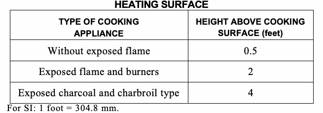
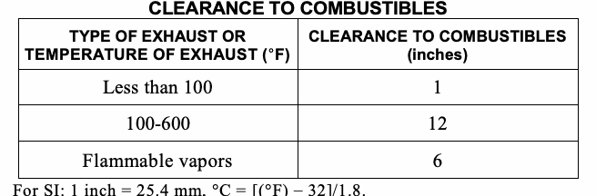

This chapter shall govern the design, construction and installation of mechanical exhaust systems, including exhaust systems serving clothes dryers and cooking appliances; hazardous exhaust systems; dust, stock and refuse conveyor systems; subslab soil exhaust systems; smoke control systems; energy recovery ventilation systems; and other systems specified in Section 502.
The air removed by every mechanical exhaust system shall be discharged outdoors at a point where it will not cause a nuisance and the air shaft will be located not less than the distances specified in Section 501.2.1. The air shall be discharged to a location from which it cannot again be readily drawn in by a ventilating system. Air shall not be exhausted into an attic or crawl space.
Exceptions:
1. Whole-house ventilation-type attic fans shall be permitted to discharge into the attic space of dwelling units having private attics.
2. Commercial cooking recirculating systems.
The termination point of exhaust outlets and ducts discharging to the outdoors shall be located within the following minimum distances:
1. For ducts conveying noxious, toxic, explosive or flammable vapors, fumes or dusts (including but not limited to exhaust form dry cleaning establishments and spray booths): 30 feet (9144 mm) from property lines; 10 feet (3048 mm) from operable openings into buildings; 6 feet (1829 mm) from exterior walls and roofs; 30 feet (9144 mm) from combustible walls and operable openings into buildings which are in the direction of the exhaust discharge; 10 feet (3048 mm) above adjoining grade. Additional requirements may apply to Hazardous Exhaust Systems; see Section 510.
2. For other product-conveying outlets: 10 feet (3048 mm) from the property lines; 3 feet (914 mm) from exterior walls and roofs; 10 feet (3048 mm) from operable openings into buildings; 10 feet (3048 mm) above adjoining grade; 10 feet from any exterior fire escape, stair, or balcony.
3. For all environmental air exhaust outlets: 3 feet (914 mm) from property lines; 3 feet (914 mm) from operable openings into buildings for all occupancies other than Group U, and 10 feet (3048 mm) from mechanical air intakes. Such exhaust outlets shall not be considered hazardous or noxious.
4. Exhaust outlets and openings serving structures in flood hazard areas shall be installed in accordance with Appendix G of the New York City Building Code.
5. For specific systems see the following sections: 5.1. Clothes dryer exhaust, Section 504.4. 5.2. Kitchen hoods and other kitchen exhaust equipment, Sections 506.3.12, 506.4 and 506.5. 5.3. Dust stock and refuse conveying systems, Section 511. 5.4. Subslab soil exhaust systems, Section 512.4. 5.5. Smoke control systems, Section 513.10.3 5.6. Refrigerant discharge, Section 1105.7. 5.7. Machinery room discharge, Section 1105.6.1.
6. In Occupancy Groups R-2 and R-3 each dwelling unit may be individually exhausted directly to the outdoors with a dedicated, exhaust fan and shall comply with the following: 6.1. The exhaust system for the kitchen and the toilet/baths may be combined to the inlet of a continuously operated single fan, provided such exhaust system serves only one dwelling unit. 6.2. The dedicated exhaust from each dwelling unit shall be directed away from any window serving the same dwelling unit from which the exhaust is taken, and in addition, such exhaust opening shall terminate at least: 6.2.1. Two feet (610 mm) from any operational window or door serving the same dwelling unit. 6.2.2. Three feet (1219 mm) from any operational window or door serving an adjoining dwelling unit. 6.2.3. Three feet (1219 mm) from any operational window or door serving another occupancy group in the same building. 6.2.4. Ten feet (3048 mm) from any outdoor air intake opening. 6.2.5. Ten feet (3048 mm) above the public sidewalk adjoining the same building. 6.2.6. All other minimum distances prescribed in Items 1 through 5 of Section 501.2.1 shall be satisfied.
Exhaust air shall not be directed onto walkways.
Exhaust openings that terminate outdoors shall be protected with corrosion-resistant screens, louvers or grilles. Openings in screens, louvers and grilles shall be sized not less than ¼ inch (6 mm) and not larger than ½ inch (13 mm). Openings shall be protected against local weather conditions. Outdoor openings located in exterior walls shall meet the provisions for exterior wall opening protective in accordance with the New York City Building Code.
All exterior louvers for building exhaust systems shall either:
1. Receive an A rating according to AMCA Standard 550 for wind-driven rain penetration for a 50 mile per hour (80.4 km/h) wind velocity with a rainfall rate of 8 inches (203 mm) per hour; or
2. Be installed on a plenum configured to intercept any wind-driven rain penetrating the louver and to prevent the rain from entering the building ductwork system. Such plenum shall be waterproofed and equipped with a drainage system to convey water penetrating the louver to storm or sanitary drains.
Mechanical exhaust systems shall be sized to remove the quantity of air required by this chapter to be exhausted. The system shall operate when air is required to be exhausted. Where mechanical exhaust is required in a room or space in other than occupancies in R-3, such space shall be maintained with a neutral or negative pressure. If a greater quantity of air is supplied by a mechanical ventilating supply system than is removed by a mechanical exhaust for a room, adequate means shall be provided for the natural or mechanical exhaust of the excess air supplied. If only a mechanical exhaust system is installed for a room or if a greater quantity of air is removed by a mechanical exhaust system than is supplied by a mechanical ventilating supply system for a room, adequate makeup air consisting of supply air, transfer air or outdoor air shall be provided to satisfy the deficiency. The calculated building infiltration rate and openable area shall not be used to satisfy the requirements of this section.
Where exhaust duct construction is not specified in this chapter, such construction shall comply with Chapter 6.
1. Single or combined mechanical exhaust systems from bath, toilet, urinal, locker, service sink closets and similar rooms shall be independent of all other exhaust systems, except as permitted in Section 501.2.1.
2. A separate grease duct system shall be provided for each Type I hood except as provided in Section 506.3.5.
3. Hazardous exhaust systems shall be independent of other types of exhaust systems as provided in Section 510.
An exhaust system shall be provided, maintained and operated as specifically required by this section and for all occupied areas where machines, vats, tanks, furnaces, forges, salamanders and other appliances, equipment and processes in such areas produce or throw off dust or particles sufficiently light to float in the air, or which emit heat, odors, fumes, spray, gas or smoke, in such quantities so as to be irritating or injurious to health or safety.
The inlet to an exhaust system shall be located in the area of heaviest concentration of contaminants.
The bottom of an air inlet or exhaust opening in fuel-dispensing areas shall be located not more than 18 inches (457 mm) above the floor.
Equipment, appliance and system service rooms that house sources of odors, fumes, noxious gases, smoke, steam, dust, spray or other contaminants shall be designed and constructed so as to prevent spreading of such contaminants to other occupied parts of the building.
The mechanical exhaust of high concentrations of dust or hazardous vapors shall conform to the requirements of Section 510.
Compartments housing piping, pumps, air eliminators, water separators, hose reels and similar equipment used in aircraft fueling and defueling operations shall be adequately ventilated in an approved manner at floor level or within the floor itself.
Ventilation shall be provided in an approved manner in battery-charging areas to prevent a dangerous accumulation of flammable gases.
Stationary storage battery systems, as regulated by Section 608 of the New York City Fire Code, shall be provided with ventilation in accordance with this chapter and Section 502.4.1 or 502.4.2.
Exception: Lithium-ion batteries shall not require ventilation.
For flooded lead acid, flooded nickel cadmium and VRLA batteries, the ventilation system shall be designed to limit the maximum concentration of hydrogen to 1.0 percent of the total volume of the room.
Continuous ventilation shall be provided at a rate of not less than 1 cubic foot per minute per square foot (cfm/ft2) (0.00508 m3/(s • m2)) of floor area of the room.
Valve-regulated lead-acid (VRLA) battery systems installed in cabinets, as regulated by Section 608.6.2 of the New York City Fire Code, shall be provided with ventilation in accordance with Section 502.5.1 or 502.5.2.
The cabinet ventilation system shall be designed to limit the maximum concentration of hydrogen to 1.0 percent of the total volume of the cabinet during the worst-case event of simultaneous boost charging of all batteries in the cabinet.
Continuous cabinet ventilation shall be provided at a rate of not less than 1 cubic foot per minute per square foot (cfm/ft2) (0.00508 m3/(s • m2)) of floor area covered by the cabinet. The room in which the cabinet is installed shall also be ventilated as required by Section 502.4.1 or 502.4.2.
Mechanical ventilation in dry cleaning plants shall be provided and shall be adequate to protect employees and the public in accordance with this section and DOL 29 CFR Part 1910.1000, where applicable. Dry cleaning separations must comply with the requirements of Section 415.6.4 of the New York City Building Code and NFPA 32.
Type II and III dry cleaning systems shall be provided with a mechanical ventilation system that is designed to exhaust 1 cubic foot of air per minute for each square foot of floor area (1 cfm/ft2) (0.00508 m3/(s • m2)) in dry cleaning rooms and in drying rooms. The ventilation system shall operate automatically when the dry cleaning equipment is in operation and shall have manual controls at an approved location.
Type IV and V dry cleaning systems shall be provided with an automatically activated exhaust ventilation system to maintain a minimum of 100 feet per minute (0.51 m/s) air velocity through the loading door when the door is opened.
Exception: Dry cleaning units are not required to be provided with exhaust ventilation where an exhaust hood is installed immediately outside of and above the loading door which operates at an airflow rate as follows:
Q = 100 ×ALD (Equation 5-1)
where:
Q = Flow rate exhausted through the hood, cubic feet per minute.
ALD= Area of the loading door, square feet.
Scrubbing tubs, scouring, brushing or spotting operations shall be located such that solvent vapors are captured and exhausted by the ventilating system.
Mechanical exhaust as required by this section shall be provided for operations involving the application of flammable finishes and shall comply with the New York City Fire Code.
Ventilation shall be provided for operations involving the application of materials containing flammable solvents in the course of construction, alteration or demolition of a structure.
Positive mechanical ventilation which provides a minimum of six complete air changes per hour shall be installed in limited spraying spaces. Such system shall meet the requirements of the New York City Fire Code for handling flammable vapors. Explosion venting is not required.
Mechanical ventilation of flammable vapor areas shall be provided in accordance with Sections 502.7.3.1 through 502.7.3.6.
Mechanical ventilation shall be kept in operation at all times while spraying operations are being conducted and for a sufficient time thereafter to allow vapors from drying coated articles and finishing material residue to be exhausted. Spraying equipment shall be interlocked with the ventilation of the flammable vapor area such that spraying operations cannot be conducted unless the ventilation system is in operation.
Air exhausted from spraying operations shall not be recirculated.
Exceptions:
1. Air exhausted from spraying operations shall be permitted to be recirculated as makeup air for unmanned spray operations provided that:
1.1. Solid particulate has been removed.
1.2. The vapor concentration is less than 25 percent of the lower flammable limit (LFL).
1.3. Approved equipment is used to monitor the vapor concentration.
1.4. An alarm is sounded and spray operations are automatically shut down if the vapor concentration exceeds 25 percent of the LFL.
1.5. In the event of shutdown of the vapor concentration monitor, 100 percent of the air volume specified in Section 510 is automatically exhausted.
2. Air exhausted from spraying operations is allowed to be recirculated as makeup air to manned spraying operations where all of the conditions provided in Exception 1 are included in the installation and documents have been prepared to show that the installation does not pose life safety hazards to personnel inside the spray booth, spraying space or spray room.
Ventilation systems shall be designed, installed and maintained such that the average air velocity over the open face of the booth, or booth cross section in the direction of airflow during spraying operations, is not less than 100 feet per minute (0.51 m/s).
Articles being sprayed shall be positioned in a manner that does not obstruct collection of overspray.
Each spray booth and spray room shall have an independent exhaust duct system discharging to the outdoors.
Exceptions:
1. Multiple spray booths having a combined frontal area of 18 square feet (1.67 m2) or less are allowed to have a common exhaust where identical spray-finishing material is used in each booth. If more than one fan serves one booth, such fans shall be interconnected so that all fans operate simultaneously.
2. Where treatment of exhaust is necessary for air pollution control or energy conservation, ducts shall be allowed to be manifolded if all of the following conditions are met: 2.1. The sprayed materials used are compatible and will not react or cause ignition of the residue in the ducts.
2.2. Nitrocellulose-based finishing material shall not be used. 2.3. A filtering system shall be provided to reduce the amount of overspray carried into the duct manifold.
2.4. Automatic sprinkler protection shall be provided at the junction of each booth exhaust with the manifold, in addition to the protection required by this chapter.
Electric motors driving exhaust fans shall not be placed inside booths or ducts. Fan rotating elements shall be nonferrous or nonsparking or the casing shall consist of, or be lined with, such material. Belts shall not enter the duct or booth unless the belt and pulley within the duct are tightly enclosed.
Flammable vapor areas of dip tank operations shall be provided with mechanical ventilation adequate to prevent the dangerous accumulation of vapors. Required ventilation systems shall be so arranged that the failure of any ventilating fan will automatically stop the dipping conveyor system.
The flammable vapor area in spray-finishing operations involving electrostatic apparatus and devices shall be ventilated in accordance with Section 502.7.3.
Exhaust ventilation for powder-coating operations shall be sufficient to maintain the atmosphere below one-half of the minimum explosive concentration for the material being applied. Nondeposited, air-suspended powders shall be removed through exhaust ducts to the powder recovery system.
To prevent the accumulation of flammable vapors during floor resurfacing operations, mechanical ventilation at a minimum rate of 1 cfm/ft2 (0.00508 m3/(s • m2)) of area being finished shall be provided. Such exhaust shall be by approved temporary or portable means. Vapors shall be exhausted to the exterior of the building. Such exhaust equipment shall be kept in operation while the floor finishing operations are conducted and until any flammable vapors have been exhausted to the exterior of the building.
Exhaust ventilation for resin application areas shall comply with Section 502.7.3.
Exception: Mechanical ventilation is not required for buildings that are unenclosed for at least 75 percent of the perimeter.
Exhaust ventilation systems for structures containing hazardous materials shall be provided as required in Sections 502.8.1 through 502.8.5 and shall comply with the New York City Fire Code.
Indoor storage areas and storage buildings for hazardous materials in amounts exceeding the maximum allowable quantity per control area shall be provided with mechanical exhaust ventilation or natural ventilation where natural ventilation can be shown to be acceptable for the materials as stored.
Exception: Storage areas for flammable solids complying with the New York City Fire Code.
Exhaust ventilation systems shall comply with all of the following:
1. The installation shall be in accordance with this code.
2. Mechanical ventilation shall be provided at a rate of not less than 1 cfm/ft2 (0.00508 m3/(s • m2)) of floor area over the storage area.
3. The systems shall operate continuously unless alternate designs are approved.
4. A manual shutoff control shall be provided outside of the room in a position adjacent to the access door to the room or in another approved location. The switch shall be a break-glass or other approved type and shall be labeled: VENTILATION SYSTEM EMERGENCY SHUTOFF.
5. The exhaust ventilation shall be designed to consider the density of the potential fumes or vapors released. For fumes or vapors that are heavier than air, exhaust shall be taken from a point within 12 inches (305 mm) of the floor. For fumes or vapors that are lighter than air, exhaust shall be taken from a point within 12 inches (305 mm) of the highest point of the room.
6. The location of both the exhaust and inlet air openings shall be designed to provide air movement across all portions of the floor or room to prevent the accumulation of vapors.
7. The exhaust air shall not be recirculated to occupied areas if the materials stored are capable of emitting hazardous vapors and contaminants have not been removed. Air contaminated with explosive or flammable vapors, fumes or dusts; flammable, highly toxic or toxic gases; or radioactive materials shall not be recirculated.
The ventilation system for gas rooms, exhausted enclosures and gas cabinets for any quantity of hazardous material shall be designed to operate at a negative pressure in relation to the surrounding area. Highly toxic and toxic gases shall also comply with Sections 502.9.7.1, 502.9.7.2 and 502.9.8.4.
Indoor dispensing and use areas for hazardous materials in amounts exceeding the maximum allowable quantity per control area shall be provided with exhaust ventilation in accordance with Section 502.8.1.
Exception: Ventilation is not required for dispensing and use of flammable solids other than finely divided particles.
Where gases, liquids or solids in amounts exceeding the maximum allowable quantity per control area and having a hazard ranking of 3 or 4 in accordance with NFPA 704 are dispensed or used, mechanical exhaust ventilation shall be provided to capture gases, fumes, mists or vapors at the point of generation.
Exception: Where it can be demonstrated that the gases, liquids or solids do not create harmful gases, fumes, mists or vapors.
Where closed systems for the use of hazardous materials in amounts exceeding the maximum allowable quantity per control area are designed to be opened as part of normal operations, ventilation shall be provided in accordance with Section 502.8.4. This – is
Exhaust ventilation systems for specific hazardous materials shall be provided as required in Section 502.8 and Sections 502.9.1 through 502.9.11 and shall comply with the New York City Fire Code.
Rooms for the storage of compressed medical gases in amounts exceeding the maximum allowable exempt quantity per control area, and which do not have an exterior wall, shall be exhausted through a duct to the exterior of the building. Each space shall be separately exhausted, and each exhaust air stream shall be enclosed in a 1-hour-rated shaft enclosure from the room to the exterior. Approved mechanical ventilation shall be provided at a minimum rate of 1 cfm/ft2 (0.00508 m3/(s • m2)) of the area of the room. Gas cabinets for the storage of compressed medical gases in amounts exceeding the maximum allowable exempt quantity per control area shall be connected to an exhaust system. The average velocity of ventilation at the face of access ports or windows shall be not less than 200 feet per minute (1.02 m/s) with a minimum velocity of 150 feet per minute (0.76 m/s) at any point at the access port or window.
Where corrosive materials in amounts exceeding the maximum allowable quantity per control area are dispensed or used, mechanical exhaust ventilation in accordance with Section 502.8.4 shall be provided.
Storage areas for stationary or portable containers of cryogenic fluids in any quantity shall be ventilated in accordance with Section 502.8. Indoor areas where cryogenic fluids in any quantity are dispensed shall be ventilated in accordance with the requirements of Section 502.8.4 in a manner that captures any vapor at the point of generation.
Exception: Ventilation for indoor dispensing areas is not required where it can be demonstrated that the cryogenic fluids do not create harmful vapors.
Squirrel cage blowers shall not be used for exhausting hazardous fumes, vapors or gases in operating buildings and rooms for the manufacture, assembly or testing of explosives. Only nonferrous fan blades shall be used for fans located within the ductwork and through which hazardous materials are exhausted. Motors shall be located outside the duct.
Exhaust ventilation systems shall be provided as required by Sections 502.9.5.1 through 502.9.5.5 for the storage, use, dispensing, mixing and handling of flammable and combustible liquids. Unless otherwise specified, this section shall apply to any quantity of flammable and combustible liquids.
Exception: This section shall not apply to flammable and combustible liquids that are exempt from the New York City Fire Code.
Vaults that contain tanks of Class I liquids shall be provided with continuous ventilation at a rate of not less than 1 cfm/ft2 of floor area (0.00508 m3/(s • m2)), but not less than 150 cfm (4 m3/min). Failure of the exhaust airflow shall automatically shut down the dispensing system. The exhaust system shall be designed to provide air movement across all parts of the vault floor. Supply and exhaust ducts shall extend to a point not greater than 12 inches (305 mm) and not less than 3 inches (76 mm) above the floor. The exhaust system shall be installed in accordance with the provisions of NFPA 91. Means shall be provided to automatically detect any flammable vapors and to automatically shut down the dispensing system upon detection of such flammable vapors in the exhaust duct at a concentration of 25 percent of the LFL.
Liquid storage rooms and liquid storage warehouses for quantities of liquids exceeding those specified in the New York City Fire Code shall be ventilated in accordance with Section 502.8.1.
Areas containing machines used for parts cleaning in accordance with the New York City Fire Code shall be adequately ventilated to prevent accumulation of vapors.
Continuous mechanical ventilation shall be provided for the use, dispensing and mixing of flammable and combustible liquids in open or closed systems in amounts exceeding the maximum allowable quantity per control area and for bulk transfer and process transfer operations. The ventilation rate shall be not less than 1 cfm/ft2 (0.00508m3/(s • m2)) of floor area over the design area. Provisions shall be made for the introduction of makeup air in a manner that will include all floor areas or pits where vapors can collect. Local or spot ventilation shall be provided where needed to prevent the accumulation of hazardous vapors.
Ventilation shall be provided for portions of properties where flammable and combustible liquids are received by tank vessels, pipelines, tank cars or tank vehicles and which are stored or blended in bulk for the purpose of distributing such liquids by tank vessels, pipelines, tank cars, tank vehicles or containers as required by Sections 502.9.5.5.1 through 502.9.5.5.3.
Ventilation shall be provided for rooms, buildings and enclosures in which Class I liquids are pumped, used or transferred. Design of ventilation systems shall consider the relatively high specific gravity of the vapors. Where natural ventilation is used, adequate openings in outside walls at floor level, unobstructed except by louvers or coarse screens, shall be provided. Where natural ventilation is inadequate, mechanical ventilation shall be provided. The natural ventilation design shall be approved for each specific application by the commissioner prior to installation and/or use.
Class I liquids shall not be stored or used within a building having a basement or pit into which flammable vapors can travel, unless such area is provided with ventilation designed to prevent the accumulation of flammable vapors therein.
Containers of Class I liquids shall not be drawn from or filled within buildings unless a provision is made to prevent the accumulation of flammable vapors in hazardous concentrations. Where mechanical ventilation is required, it shall be kept in operation while flammable vapors could be present.
Ventilation exhaust shall be provided for highly toxic and toxic liquids as required by Sections 502.9.6.1 and 502.9.6.2.
This provision shall apply to indoor and outdoor storage and use of highly toxic and toxic liquids in amounts exceeding the maximum allowable quantities per control area. Exhaust scrubbers or other systems for processing vapors of highly toxic liquids shall be provided where a spill or accidental release of such liquids can be expected to release highly toxic vapors at normal temperature and pressure.
Mechanical exhaust ventilation shall be provided for highly toxic and toxic liquids used in open systems in accordance with Section 502.8.4. Mechanical exhaust ventilation shall be provided for highly toxic and toxic liquids used in closed systems in accordance with Section 502.8.5.
Exception: Liquids or solids that do not generate highly toxic or toxic fumes, mists or vapors.
Ventilation exhaust shall be provided for highly toxic and toxic compressed gases in any quantity as required by Sections 502.9.7.1 and 502.9.7.2.
Gas cabinets containing highly toxic or toxic compressed gases in any quantity shall comply with Section 502.8.2 and the following requirements:
1. The average ventilation velocity at the face of gas cabinet access ports or windows shall be not less than 200 feet per minute (1.02 m/s) with a minimum velocity of 150 feet per minute (0.76 m/s) at any point at the access port or window.
2. Gas cabinets shall be connected to an exhaust system.
3. Gas cabinets shall not be used as the sole means of exhaust for any room or area.
Exhausted enclosures containing highly toxic or toxic compressed gases in any quantity shall comply with Section 502.8.2 and the following requirements:
1. The average ventilation velocity at the face of the enclosure shall be not less than 200 feet per minute (1.02 m/s) with a minimum velocity of 150 feet per minute (0.76 m/s).
2. Exhausted enclosures shall be connected to an exhaust system.
3. Exhausted enclosures shall not be used as the sole means of exhaust for any room or area.
Ventilation exhaust shall be provided for highly toxic and toxic compressed gases in amounts exceeding the maximum allowable quantities per control area as required by Sections 502.9.8.1 through 502.9.8.6.
The room or area in which indoor gas cabinets or exhausted enclosures are located shall be provided with exhaust ventilation. Gas cabinets or exhausted enclosures shall not be used as the sole means of exhaust for any room or area.
A means of local exhaust shall be provided to capture leakage from indoor and outdoor portable tanks. The local exhaust shall consist of portable ducts or collection systems designed to be applied to the site of a leak in a valve or fitting on the tank. The local exhaust system shall be located in a gas room. Exhaust shall be directed to a treatment system where required by the New York City Fire Code.
Filling or dispensing connections on indoor stationary tanks shall be provided with a means of local exhaust. Such exhaust shall be designed to capture fumes and vapors. The exhaust shall be directed to a treatment system where required by the New York City Fire Code.
The ventilation system for gas rooms shall be designed to operate at a negative pressure in relation to the surrounding area. The exhaust ventilation from gas rooms shall be directed to an exhaust system.
The exhaust ventilation from gas cabinets, exhausted enclosures and gas rooms, and local exhaust systems required in Sections 502.9.8.2 and 502.9.8.3 shall be directed to a treatment system where required by the New York City Fire Code.
Effluent from indoor and outdoor process equipment containing highly toxic or toxic compressed gases which could be discharged to the atmosphere shall be processed through an exhaust scrubber or other processing system. Such systems shall be in accordance with the New York City Fire Code.
Ozone cabinets and ozone gas-generator rooms for systems having a maximum ozone-generating capacity of one-half pound (0.23 kg) or more over a 24-hour period shall be mechanically ventilated at a rate of not less than six air changes per hour. For cabinets, the average velocity of ventilation at makeup air openings with cabinet doors closed shall be not less than 200 feet per minute (1.02 m/s).
LP-gas distribution facilities shall conform to the requirements of the New York City Fire Code.
Exhausted enclosures and gas cabinets for the indoor storage of silane gas in amounts exceeding the maximum allowable quantities per control area shall comply with this section.
1. Exhausted enclosures and gas cabinets shall be in accordance with Section 502.8.2.
2. The velocity of ventilation across unwelded fittings and connections on the piping system shall not be less than 200 feet per minute (1.02 m/s).
3. The average velocity at the face of the access ports or windows in the gas cabinet shall not be less than 200 feet per minute (1.02 m/s) with a minimum velocity of 150 feet per minute (0.76 m/s) at any point at the access port or window.
Exhaust ventilation systems and materials for ducts utilized for the exhaust of HPM shall comply with this section, other applicable provisions of this code, the New York City Building Code and the New York City Fire Code.
Exhaust ventilation systems shall be provided in the following locations in accordance with the requirements of this section and the New York City Building Code:
1. Fabrication areas: Exhaust ventilation for fabrication areas shall comply with the New York City Building Code. Additional manual control switches shall be provided where required by the commissioner.
2. Workstations: A ventilation system shall be provided to capture and exhaust gases, fumes and vapors at workstations.
3. Liquid storage rooms: Exhaust ventilation for liquid storage rooms shall comply with Section 502.8.1.1 and the New York City Building Code.
4. HPM rooms: Exhaust ventilation for HPM rooms shall comply with Section 502.8.1.1 and the New York City Building Code.
5. Gas cabinets: Exhaust ventilation for gas cabinets shall comply with Section 502.8.2. The gas cabinet ventilation system is allowed to connect to a workstation ventilation system. Exhaust ventilation for gas cabinets containing highly toxic or toxic gases shall also comply with Sections 502.9.7 and 502.9.8.
6. Exhausted enclosures: Exhaust ventilation for exhausted enclosures shall comply with Section 502.8.2. Exhaust ventilation for exhausted enclosures containing highly toxic or toxic gases shall also comply with Sections 502.9.7 and 502.9.8.
7. Gas rooms: Exhaust ventilation for gas rooms shall comply with Section 502.8.2. Exhaust ventilation for gas cabinets containing highly toxic or toxic gases shall also comply with Sections 502.9.7 and 502.9.8.
Exhaust ducts penetrating fire barrier assemblies shall be contained in a shaft of equivalent fire-resistive construction. Exhaust ducts shall not penetrate building separation fire walls. Fire dampers shall not be installed in exhaust ducts.
Treatment systems for highly toxic and toxic gases shall comply with the New York City Fire Code.
Motion picture projectors shall be exhausted in accordance with Section 502.11.1 or 502.11.2.
Projectors equipped with an exhaust discharge shall be directly connected to a mechanical exhaust system. The exhaust system shall operate at an exhaust rate as indicated by the manufacturer’s installation instructions.
Projectors without an exhaust connection shall have contaminants exhausted through a mechanical exhaust system. The exhaust rate for electric arc projectors shall be a minimum of 200 cubic feet per minute (cfm) (0.09 m3/s) per lamp. The exhaust rate for xenon projectors shall be a minimum of 300 cfm (0.14 m3/s) per lamp. Xenon projector exhaust shall be at a rate such that the exterior temperature of the lamp housing does not exceed 130°F (54°C). The lamp and projection room exhaust systems, whether combined or independent, shall not be interconnected with any other exhaust or return system within the building.
Enclosed structures involving organic coating processes in which Class I liquids are processed or handled shall be ventilated at a rate of not less than 1 cfm/ft2 (0.00508 m3/(s • m2)) of solid floor area. Ventilation shall be accomplished by exhaust fans that intake at floor levels and discharge to a safe location outside the structure. Noncontaminated intake air shall be introduced in such a manner that all portions of solid floor areas are provided with continuous uniformly distributed air movement.
Mechanical exhaust systems for public garages, as required in Chapter 4, shall operate continuously or in accordance with Section 404.
In areas where motor vehicles operate, mechanical ventilation shall be provided in accordance with Section 403. Additionally, areas in which stationary motor vehicles are operated shall be provided with a source capture system that connects directly to the motor vehicle exhaust systems.
Exceptions:
1. This section shall not apply where the motor vehicles being operated or repaired are electrically powered.
2. This section shall not apply to one- and two-family dwellings.
3. This section shall not apply to motor vehicle service areas where engines are operated inside the building only for the duration necessary to move the motor vehicles in and out of the building.
Where Class I liquids or LP-gas are stored or used within a building having a basement or pit wherein flam-mable vapors could accumulate, the basement or pit shall be provided with ventilation at a minimum rate of 1.5 cubic feet per minute per square foot (cfm/ft2) (0.008 m3/(s • m2)) designed to prevent the accumulation of flammable vapors therein.
Repair garages used for the repair of natural gas- or hydrogen-fueled vehicles shall be provided with an approved mechanical ventilation system. The mechanical ventilation system shall be in accordance with Sections 502.16.1 and 502.16.2.
Exception: Where approved by the commissioner, natural ventilation shall be permitted in lieu of mechanical ventilation.
Indoor locations shall be ventilated utilizing air supply inlets and exhaust outlets arranged to provide uniform air movement to the extent practical. Inlets shall be uniformly arranged on exterior walls near floor level. Outlets shall be located at the high point of the room in exterior walls or the roof.
1. Ventilation shall be by a continuous mechanical ventilation system or by a mechanical ventilation system activated by a continuously monitoring natural gas detection system, or for hydrogen, a continuously monitoring flammable gas detection system, each activating at a gas concentration of 25 percent of the lower flammable limit (LFL). In all cases, the system shall shut down the fueling system in the event of failure of the ventilation system.
2. The ventilation rate shall be at least 1 cubic foot per minute per 12 cubic feet (0.00138 m3/(s • m3)) of room volume.
The mechanical ventilation system shall operate continuously.
Exceptions:
1. Mechanical ventilation systems that are interlocked with a gas detection system designed in accordance with the New York City Building Code.
2. Mechanical ventilation systems in garages that are used only for the repair of vehicles fueled by liquid fuels or odorized gases, such as CNG, where the ventilation system is electrically interlocked with the lighting circuit.
Each room where rubber cement is used or mixed, or where flammable or combustible solvents are applied, shall be ventilated in accordance with the applicable provisions of NFPA 91.
Each buffing machine shall be connected to a dust-collecting system that prevents the accumulation of the dust produced by the buffing process.
Specific rooms, including bathrooms, locker rooms, smoking lounges and toilet rooms, shall be exhausted in accordance with the ventilation requirements of Chapter 4.
In all Group R occupancies a minimum of No. 18 Gage galvanized sheet metal shall be used, except that ductwork that complies with Section 603.6.1.2 shall be permitted for independent apartment exhaust systems providing general exhaust ventilation of kitchen and toilet areas.
Nonproduction chemical laboratories shall comply with Section 424 of the New York City Building Code and NFPA 45.
Ventilation shall be provided in an approved manner in areas utilized as indoor firing ranges.
Motors and fans shall be sized to provide the required air movement. Motors in areas that contain flammable vapors or dusts shall be of a type approved for such environments. A manually operated remote control installed at an approved location shall be provided to shut off fans or blowers in flammable vapor or dust systems. Electrical equipment and appliances used in operations that generate explosive or flammable vapors, fumes or dusts shall be interlocked with the ventilation system so that the equipment and appliances cannot be operated unless the ventilation fans are in operation. Motors for fans used to convey flammable vapors or dusts shall be located outside the duct or shall be protected with approved shields and dustproofing. Motors and fans shall be provided with a means of access for servicing and maintenance.
Parts of fans in contact with explosive or flammable vapors, fumes or dusts shall be of nonferrous or nonsparking materials, or their casing shall be lined or constructed of such material. When the size and hardness of materials passing through a fan are capable of producing a spark, both the fan and the casing shall be of nonsparking materials. When fans are required to be spark resistant, their bearings shall not be within the airstream, and all parts of the fan shall be grounded. Fans in systems-handling materials that are capable of clogging the blades, and fans in buffing or woodworking exhaust systems, shall be of the radial-blade or tube-axial type.
Equipment and appliances used to exhaust explosive or flammable vapors, fumes or dusts shall bear an identification plate stating the ventilation rate for which the system was designed.
Fans located in systems conveying corrosives shall be of materials that are resistant to the corrosive or shall be coated with corrosion-resistant materials.
Fans exhausting noxious, toxic, hot vapor or grease-laden air shall be located as close to the terminus as practicable, at the roof or within a mechanical equipment room, immediately below the roof.
Exception: Where the fan is listed or approved for such an application.
Clothes dryers shall be exhausted in accordance with the manufacturer’s instructions. Dryer exhaust systems shall be independent of all other systems and shall convey the moisture and any products of combustion to the outside of the building. For the installation of gas dryers, refer to Section 614 of the New York City Fuel Gas Code.
Exception: This section shall not apply to listed and labeled condensing (ductless) electric clothes dryers.
Where a clothes dryer exhaust duct penetrates a wall or ceiling membrane, the annular space shall be sealed with noncombustible material, approved fire caulking or a noncombustible dryer exhaust duct wall receptacle. Ducts that exhaust clothes dryers shall not penetrate or be located within any fireblocking, draftstopping or any wall, floor/ceiling or other assembly required by the New York City Building Code to be fire-resistance rated, unless such duct is constructed of galvanized steel or aluminum of the thickness specified in Section 603.4 and the fire-resistance rating is maintained in accordance with the New York City Building Code. Fire dampers, combination fire/smoke dampers and any similar devices that will obstruct the exhaust flow shall be prohibited in clothes dryer exhaust ducts.
Each vertical riser shall be provided with a means for cleanout.
Dryer exhaust ducts for clothes dryers shall terminate on the outside of the building. Single dryer installations shall be equipped with a backdraft damper. Multiple dryer installations shall not have a backdraft damper. Screens shall not be installed at the duct termination. Ducts shall not be connected or installed with sheet metal screws or other fasteners that will obstruct the exhaust flow. Clothes dryer exhaust ducts shall not be connected to a vent connector, vent or chimney. Clothes dryer exhaust ducts shall not extend into or through ducts or plenums.
Installations exhausting more than 200 cfm (0.09 m3/s) shall be provided with makeup air. Where a closet is designed for the installation of a clothes dryer, an opening having an area of not less than 100 square inches (0.0645 m2) shall be provided in the closet enclosure or makeup air shall be provided by other approved means.
Exhaust ducts for domestic clothes dryers shall conform to the requirements of Sections 504.6.1 through 504.6.7.
Exhaust ducts shall have a smooth interior finish and shall be constructed of metal a minimum 0.016 inch (0.4 mm) thick. The exhaust duct size shall be 4 inches (102 mm) nominal in diameter.
Exception: Where the make and model of the clothes dryer to be installed is known and the manufacturer’s installation instructions for such dryer are provided, the maximum length of the exhaust duct, including any transition duct, shall be permitted to be in accordance with the dryer manufacturer’s installation instructions.
Exhaust ducts shall be supported at 4-foot (1219 mm) intervals and secured in place. The insert end of the duct shall extend into the adjoining duct or fitting in the direction of airflow. Ducts shall not be joined with screws or similar fasteners that protrude into the inside of the duct.
Transition ducts used to connect the dryer to the exhaust duct system shall be a single length that is listed and labeled in accordance with UL 2158A. Transition ducts shall be a maximum of 8 feet (2438 mm) in length and shall not be concealed within construction.
The maximum allowable exhaust duct length shall be determined by one of the methods specified in Section 504.6.4.1 or 504.6.4.2.
The maximum length of the exhaust duct shall be 35 feet (10 668 mm) from the connection to the transition duct from the dryer to the outlet terminal. Where fittings are used, the maximum length of the exhaust duct shall be reduced in accordance with Table 504.6.4.1.
| DRYER EXHAUST DUCT FITTING TYPE | EQUIVALENT LENGTH |
|---|---|
| 4” radius mitered 45-degree elbow | 2 feet 6 inches |
| 4” radius mitered 90-degree elbow | 5 feet |
| 6” radius smooth 45-degree elbow | 1 foot |
| 6” radius smooth 90-degree elbow | 1 foot 9 inches |
| 8” radius smooth 45-degree elbow | 1 foot |
| 8” radius smooth 90-degree elbow | 1 foot 7 inches |
| 10” radius smooth 45-degree elbow | 9 inches |
| 10” radius smooth 90-degree elbow | 1 foot 6 inches |
For SI: 1 inch = 25.4 mm, 1 foot = 304.8 mm, 1 degree = 0.0175 rad.
The maximum length of the exhaust duct shall be determined by the dryer manufacturer’s installation instructions. The code official shall be provided with a copy of the installation instructions fo r the make and model of the dryer. Where the exhaust duct is to be concealed, the installation instructions shall be provided to the code official prior to the concealment inspection. In the absence of fitting equivalent length calculations from the clothes dryer manufacturer, Table 504.6.4.1 shall be used.
Where the exhaust duct is concealed within the building construction, the equivalent length of the exhaust duct shall be identified on a permanent label or tag. The label or tag shall be located within 6 feet (1829 mm) of the exhaust duct connection.
Where space for a clothes dryer is provided, an exhaust duct system shall be installed. Where the clothes dryer is not installed at the time of occupancy, the exhaust duct shall be capped at the location of the future dryer.
Exception: Where a listed condensing clothes dryer is installed prior to occupancy of structure.
Protective shield plates shall be placed where nails or screws from finish or other work are likely to penetrate the clothes dryer exhaust duct. Shield plates shall be placed on the finished face of all framing members where there is less than 1¼ inches (32 mm) between the duct and the finished face of the framing member. Protective shield plates shall be constr ucted of steel, have a thickness of 0.062 inch (1.6 mm) and extend a minimum of 2 inches (51 mm) above sole plates and below top plates.
The installation of dryer exhaust ducts serving Type 2 clothes dryers shall comply with the appliance manufacturer’s installation instructions. Exhaust fan motors installed in exhaust systems shall be located outside of the airstream. In multiple installations, the fan shall operate continuously or be interlocked to operate when any individual unit is operating. Ducts shall have a minimum clearance of 6 inches (152 mm) to combustible materials. Clothes dryer transition ducts used to connect the appliance to the exhaust duct system shall be limited to single lengths not to exceed 8 feet (2438 mm) in length and shall be listed and labeled for the application. Transition ducts shall not be concealed within construction.
Where a common multistory duct system is designed and installed to convey exhaust from multiple clothes dryers, the construction of the system shall be in accordance with all the following:
1. The shaft in which the duct is installed shall be constructed and fire-resistance rated as required by the New York City Building Code.
2. Dampers shall be prohibited in the exhaust duct.
3. Rigid metal ductwork shall be installed within the shaft to convey the exhaust. The ductwork shall be constructed of sheet steel having a minimum thickness of 0.0187 inch (0.47 mm) (No. 26 gage) and in accordance with SMACNA Duct Construction Standards.
4. Exhaust ducts 20 square inches (129 cm2) or less connected into dryer exhaust shafts shall not require fire dampers when the exhaust fan runs continuously. Exhaust ducts greater than 20 square inches (129 cm2) shall not be connected into a common shaft with other laundry exhausts.
5. The exhaust fan motor design shall be in accordance with Section 503.2.
6. The exhaust fan motor shall be located outside of the airstream.
7. The exhaust fan shall run continuously, and shall be connected to a standby power source, where a building standby power source is required per the New York City Building Code.
8. Exhaust fan operation shall be monitored in an approved location and shall initiate an audible or visual signal when the fan is not in operation.
9. Makeup air shall be provided for the exhaust system.
10. A cleanout opening shall be located at the base of the shaft and all offsets to provide access to the duct to allow for cleaning and inspection. The finished opening shall be not less than 12 inches by 12 inches (305 mm by 305 mm).
11. Screens shall not be installed at the termination.
Where domestic range hoods and domestic appliances equipped with downdraft exhaust are located within dwelling units, such hoods and appliances shall discharge to the outdoors through ducts constructed of galvanized steel, stainless steel, aluminum or copper. Such ducts shall have smooth inner walls and shall be air tight and equipped with a backdraft damper. Such exhaust system shall be installed in strict compliance with the manufacturer’s recommendations as well as the requirements of the listing.
Exceptions:
1. Where installed in accordance with the manufacturer’s installation instructions and where mechanical or natural ventilation is otherwise provided in accordance with Chapter 4, listed and labeled ductless range hoods shall not be required to discharge to the outdoors.
2. Ducts for domestic kitchen cooking appliances equipped with downdraft exhaust systems shall be permitted to be constructed of Schedule 40 PVC pipe and fittings provided that the installation complies with all of the following: 2.1. The duct shall be installed under a concrete slab poured on grade.
2.2. The underfloor trench in which the duct is installed shall be completely backfilled with sand or gravel. 2.3. The PVC duct shall extend not greater than 1 inch (25 mm) above the indoor concrete floor surface.
2.4. The PVC duct shall extend not greater than 1 inch (25 mm) above grade outside of the building. 2.5. The PVC ducts shall be solvent cemented.
Exhaust hood systems capable of exhausting in excess of 400 cfm (0.19 m3/s) shall be provided with makeup air at a rate in accordance with Table 403.3. Such makeup air systems shall be equipped with a means of closure and shall be automatically controlled to start and operate simultaneously with the exhaust system.
SYSTEM DUCTS AND EXHAUST EQUIPMENT
Commercial kitchen hood ventilation ducts and exhaust equipment shall comply with the requirements of this section. Commercial kitchen grease ducts shall be designed for the type of cooking appliance and hood served. All ducts shall lead directly to the exterior of the building and terminate as required by Section 506.3.12 for Type 1 hoods and Section 506.4.2 for Type II hoods.
Ducts exposed to the outside atmosphere or subject to a corrosive environment shall be protected against corrosion in accordance with the following:
1. At the base of each duct and at its termination point a clearly identifiable permanent sign shall be installed identifying the facility from which the duct originates. All exterior ducts shall be protected on the exterior by paint or other weatherproof protective coating. Stainless steel ducts shall not require paint or weatherproof protective coating.
2. No portion of an exterior metal duct shall be nearer than 24 inches (610 mm) to any door or window or to any exit, or located where it would be readily accessible to the public, unless it is insulated or shielded to avoid injury to any person coming in contact with the duct.
Exception: Listed and labeled factory-built commercial kitchen grease ducts may be used when installed in accordance with Section 304.1.
Type I exhaust ducts shall be independent of all other exhaust systems except as provided in Section 506.3.5. Commercial kitchen duct systems serving Type I hoods shall be designed, constructed and installed in accordance with Sections 506.3.1 through 506.3.12.3.
Ducts serving Type I hoods shall be constructed of materials in accordance with Sections 506.3.1.1 and 506.3.1.2.
Grease ducts serving Type I hoods, and located within buildings, shall be constructed as follows:
1. Ducts with a cross-sectional area up to and including 155 square inches (100 000 mm2) shall be constructed of 0.0598-inch (1.52 mm) No. 16 Gage steel;
2. Ducts with a cross-sectional area over 155 square inches (100 000 mm2), but not more than 200 square inches (0.129 m2) shall be constructed of 0.074-inch (1.9 mm) No. 14 Gage steel; and
3. Ducts with a cross-sectional area equal to or more than 200 square inches (0.129 m2) shall be constructed of 0.1046-inch (2.66 mm) No. 12 Gage steel.
If stainless steel is used for ducts of any of the cross-sectional areas listed above, the Gage steel may be increased upwards (resulting in a smaller thickness) by 1 even Gage size.
Exception: Listed and labeled factory-built commercial kitchen grease ducts shall be listed and labeled in accordance with UL 1978 and installed in accordance with Section 304.1 and as approved by the commissioner.
Make up air ducts connecting to or within 18 inches (457 mm) of a Type I hood shall be constructed and installed in accordance with Sections 603.1, 603.3, 603.4, 603.9, 603.10, and 603.12. Duct insulation installed within 18 inches (457 mm) of a Type I hood shall be noncombustible or shall be listed for the application.
Joints, seams and penetrations of grease ducts shall be made with a continuous liquid-tight weld or braze made on the external surface of the duct system.
Exceptions:
1. Penetrations shall not be required to be welded or brazed where sealed by devices that are listed for the application.
2. Internal welding or brazing shall not be prohibited provided that the joint is formed or ground smooth and is provided with ready access for inspection.
3. Factory-built commercial kitchen grease ducts listed and labeled in accordance with UL 1978 and installed in accordance with Section 304.1.
Duct joints shall be butt joints, welded flange joints with a maximum flange depth of ½ inch (12.7 mm) or overlapping duct joints of either the telescoping or bell type. Overlapping joints shall be installed to prevent ledges and obstructions from collecting grease or interfering with gravity drainage to the intended collection point. The difference between the inside cross-sectional dimensions of overlapping sections of duct shall not exceed ¼ inch (6.4 mm). The length of overlap for overlapping duct joints shall not exceed 2 inches (51 mm).
Duct-to-hood joints shall be made with continuous internal or external liquid-tight welded or brazed joints. Such joints shall be smooth, accessible for inspection, and without grease traps.
Exceptions: This section shall not apply to:
1. A vertical duct-to-hood collar connection made in the top plane of the hood in accordance with all of the following:
1.1. The hood duct opening shall have a 1-inch-deep (25 mm), full perimeter, welded flange turned down into the hood interior at an angle of 90 degrees (1.57 rad) from the plane of the opening.
1.2. The duct shall have a 1-inch-deep (25 mm) flange made by a 1-inch by 1-inch (25 mm by 25 mm) angle iron welded to the full perimeter of the duct not less than 1 inch (25 mm) above the bottom end of the duct.
1.3. A gasket rated for use at not less than 1,500°F (815°C) is installed between the duct flange and the top of the hood.
1.4. The duct-to-hood joint shall be secured by stud bolts not less than 1/4 inch (6.4 mm) in diameter welded to the hood with a spacing not greater than 4 inches (102 mm) on center for the full perimeter of the opening. All bolts and nuts are to be secured with lockwashers.
2. Listed and labeled duct-to-hood collar connections installed in accordance with Section 304.1.
Duct-to-exhaust fan connections shall be flanged and gasketed at the base of the fan for vertical discharge fans; shall be flanged, gasketed and bolted to the inlet of the fan for side-inlet utility fans; and shall be flanged, gasketed and bolted to the inlet and outlet of the fan for in-line fans. Approved flexible connectors may be provided.
A vibration isolation connector for connecting a duct to a fan shall consist of noncombustible packing in a metal sleeve joint of approved design or shall be a coated-fabric flexible duct connector listed and labeled for the application. Vibration isolation connectors shall be installed only at the connection of a duct to a fan inlet or outlet.
Prior to the use or concealment of any portion of a grease duct system, a leakage test shall be performed. Ducts shall be considered to be concealed where installed in shafts or covered by coatings or wraps that prevent the ductwork from being visually inspected on all sides. The duct installer shall be responsible for providing the necessary equipment and performing the grease duct leakage test. A duct leakage test, in accordance with this section, shall be performed for the entire duct system, including the hood-to-duct connection. The duct work shall be permitted to be tested in sections, provided that every joint is tested.
To determine the tightness of the grease duct construction, a smoke test shall be made in accordance with the following conditions and requirements:
1. The test shall be performed in the presence of the special inspector.
2. The grease duct shall be filled with a thick penetrating smoke produced by one or more smoke machines, or smoke bombs. A static pressure equal to or not less than 2 inches water gauge (500 Pa) shall be maintained throughout the test. The test shall be applied for a length of time sufficient to permit the inspection of the grease duct.
3. If the test shows any evidence of leakage or other defects, such defects shall be corrected in accordance with the requirements of this chapter, and the test shall be repeated until there is no visible smoke observed.
Grease duct bracing and supports shall be of noncombustible material securely attached to the structure and designed to carry gravity and seismic loads within the stress limitations of the New York City Building Code. Bolts, screws, rivets and other mechanical fasteners shall not penetrate duct walls.
Grease duct systems serving a Type I hood shall be designed and installed to provide an air velocity within the duct system of not less than 500 feet per minute (2.5 m/s).
Exception: The velocity limitations shall not apply within duct transitions utilized to connect ducts to differently sized or shaped openings in hoods and fans, provided that such transitions do not exceed 3 feet (914 mm) in length and are designed to prevent the trapping of grease.
A separate grease duct system shall be provided for each Type I hood.
Exceptions:
1. A separate grease duct system is not required where all of the following conditions are met: 1.1. All interconnected hoods are located within the same story, provided that they are part of the same facility and under the control of one owner or tenant. 1.2. All interconnected hoods are located within the same room or in adjoining rooms, provided that they are part of the same facility and under the control of one owner or tenant. 1.3. Interconnecting ducts do not penetrate assemblies required to be fire-resistance rated.
1.4. The grease duct system does not serve solid fuel-fired appliances.
2. Branch ducts from other equipment in the same kitchen area, or from registers exhausting the kitchen space in general, may be connected to the main hood exhaust duct if the following requirements are complied with:
2.1. A fusible link fire damper of the same gage as the hood exhaust duct shall be added at the point of connection of the branch duct to the exhaust duct.
2.2. If the branch connection is made to the portion of the ductwork that will contain the fire-extinguishing medium, then the fire dampers required in Exception 2.1 shall be arranged to close automatically upon the operation of the fire-extinguishing system.
2.3. The branch connection shall be made in either the top or sides of the main duct in a manner to prevent grease from flowing into the branch duct.
2.4. The branch ducts shall be constructed of steel, aluminum, or copper of the gages and weights required in Chapter 6, and they shall be insulated with 2 inches (51 mm) of magnesia or other material having equivalent insulative and fire resistance qualities.
2.5. All registers in these branches shall have fusible link actuated dampers.
2.6. Where branch ductwork is to be used to exhaust vapors from dishwashers, pot sinks, or other similar equipment of a commercial type from which moisture is emitted, copper or aluminum of the minimum gage and weights required in Chapter 6 shall be used. Such ductwork shall be installed so that condensate cannot leak from it.
2.7. Type I and Type II exhaust systems can be interconnected downstream of filters with a fire damper at the connection to the exhaust system.
Where enclosures are not required, grease duct systems and exhaust equipment serving a Type I hood shall have a clearance to combustible construction of not less than 18 inches (457 mm), and shall have a clearance to noncombustible construction and gypsum wallboard attached to noncombustible structures of not less than 3 inches (76 mm).
Exceptions:
1. For factory-built commercial kitchen grease ducts listed and labeled in accordance with UL 1978, the required clearance shall be in accordance with the listing of such material and as approved by the commissioner.
2. Listed and labeled exhaust equipment installed in accordance with Section 304.1.
3. Where commercial kitchen grease ducts are continuously covered on all sides with a listed and labeled field-applied grease duct enclosure material, system, product or method of construction specifically evaluated for such purpose in accordance with ASTM E 2336, the required clearance shall be in accordance with the listing of such material, system, product or method.
4. Grease ducts protected with a minimum insulation covering of 2 inches (51 mm) of magnesium or calcium silicate block, with staggered joints, attached with galvanized steel wire or material assembly equivalent in insulating and fire-resistant qualities which cannot be penetrated by grease. Such protection shall be applied to all ducts inside of the building as approved by the commissioner.
Duct systems serving a Type I hood shall be constructed and installed so that grease cannot collect in any portion thereof, and the system shall slope not less than one-fourth unit vertical in 12 units horizontal (2-percent slope) toward the hood or toward an approved grease reservoir. Where horizontal ducts exceed 75 feet (22 860 mm) in length, the slope shall not be less than one unit vertical in 12 units horizontal (8.3-percent slope). Dampers shall not be installed in the grease duct systems, except as required by Section 506.3.5, Exception 2.
A residue trap shall be provided at the base of each vertical riser with provision for cleanout in accordance with NFPA 96.
Grease duct systems shall not have openings therein other than those required for proper operation and maintenance of the system. Any portion of such system having sections not provided with access from the duct entry or discharge shall be provided with cleanout openings. Cleanout openings shall be provided at every change in direction, within 3 feet (914 mm) of the exhaust fan, and as required under Section 506.3.9. Cleanout openings shall be equipped with tight-fitting doors constructed of steel having a thickness not less than that required for the duct. Doors shall be equipped with a substantial method of latching, sufficient to hold the door tightly closed. Doors shall be designed so that they are operable without the use of a tool. Door assemblies shall have a gasket or sealant that is noncombustible and liquid tight, and shall not have fasteners that penetrate the duct. Listed and labeled access door assemblies shall be installed in accordance with the terms of the listing. Signage shall be provided at all required access doors and openings in accordance with Section 506.3.11.
Where ductwork is large enough to allow entry of personnel, not less than one approved or listed opening having dimensions not less than 22 inches by 20 inches (559 mm by 508 mm) shall be provided in the horizontal sections, and in the top of vertical risers. Where such entry is provided, the duct and its supports shall be capable of supporting the additional load and the cleanouts specified in Section 506.3.8 are not required. Where personnel entry is not possible for cleaning the interior of vertical ducts, suitable provisions shall be made to clean the vertical duct in its entirety as well as for cleaning the base of the vertical riser.
A suitable cleanout shall be provided for both the inlet side and outlet side of an in-line fan except where a duct does not connect to the fan. Such cleanouts shall be located within 3 feet (914 mm) of the fan duct connections to permit a thorough cleaning of the inlet and discharge ducts connected to the in-line fan as well as the interior of the fan itself.
Exception: Where suitable cleanouts for in-line fans cannot be provided, the in-line fan shall be of “clam shell” construction which shall permit the fan to be opened and thoroughly cleaned while remaining in place.
Cleanouts located on horizontal sections of ducts shall be spaced not more than 20 feet (6096 mm) apart, unless the opening prescribed by Section 506.3.8.1 is not possible, in which case openings large enough to permit thorough cleaning shall be provided at 12-foot (3658 mm) intervals. The cleanouts shall be located on the side of the duct with the opening not less than 1.5 inches (38 mm) above the bottom of the duct, and not less than 1 inch (25 mm) below the top of the duct. The opening minimum dimensions shall be 12 inches (305 mm) on each side. Where the dimensions of the side of the duct prohibit the cleanout installation prescribed herein, the openings shall be on the top of the duct or the bottom of the duct. Where located on the top of the duct, the opening edges shall be a minimum of 1 inch (25 mm) from the edges of the duct. Where located in the bottom of the duct, cleanout openings shall be designed to provide internal damming around the opening, shall be provided with gasketing to preclude grease leakage, shall provide for drainage of grease down the duct around the dam, and shall be approved for the application. Where the dimensions of the sides, top or bottom of the duct preclude the installation of the prescribed minimum-size cleanout opening, the cleanout shall be located on the duct face that affords the largest opening dimension and shall be installed with the opening edges at the prescribed distances from the duct edges as previously set forth in this section.
A grease duct serving a Type I hood that penetrates a ceiling, wall or floor shall be enclosed from the first point of penetration to the outlet terminal. A duct shall penetrate exterior walls only at locations where unprotected openings are permitted by the New York City Building Code. The duct enclosure shall serve a single grease duct and shall not contain other ducts, piping or wiring systems. Duct enclosures shall be either field-applied or factory-built. Duct enclosures shall have a fire-resistance rating not less than that of the fire-resistance rated assembly penetrated, but need not exceed 2 hours. Duct enclosures shall be as prescribed by Section 506.3.10.1, 506.3.10.2 or 506.3.10.3.
Commercial kitchen grease ducts constructed in accordance with Section 506.3.1 shall be permitted to be enclosed in accordance with the New York City Building Code requirements for shaft construction. Such grease duct systems and exhaust equipment shall have a clearance to combustible construction of not less than 18 inches (457 mm), and shall have a clearance to noncombustible construction and gypsum wallboard attached to noncombustible structures of not less than 6 inches (152 mm). Duct enclosures shall be sealed around the duct at the point of penetration and vented to the outside of the building through the use of weather-protected openings.
Exceptions:
1. The shaft enclosure provisions of this section shall not be required where a duct penetration is protected with a through-penetration firestop system classified in accordance with ASTM E 814 and having an “F” and “T” rating equal to the fire-resistance rating of the assembly being penetrated and where the surface of the duct is continuously covered on all sides from the point at which the duct penetrates a ceiling, wall or floor to the outlet terminal with a classified and labeled material, system, method of construction or product specifically evaluated for such purpose, which material, system, method of construction or product is approved by the commissioner and installed according to the manufacturer’s instructions. Exposed duct wrap systems shall be protected where subject to physical damage.
2. As an alternative to Exception 1 of this section, a minimum insulation covering of 2 inches (51 mm) of magnesium or calcium silicate block, with staggered joints, attached with galvanized steel wire or material assembly equivalent in insulating and fire-resistant qualities which cannot be penetrated by grease, and as approved by the commissioner, shall be applied to all ducts inside of the building.
3. A duct enclosure shall not be required for a grease duct that penetrates only a nonfire-resistance-rated roof/ceiling assembly.
4. A listed and labeled factory-built commercial kitchen grease duct system, evaluated as an enclosure system for reduced clearances to combustibles, and approved by the commissioner and installed according to manufacturer’s instructions.
Commercial kitchen grease ducts constructed in accordance with Section 506.3.1 shall be enclosed by a field-applied grease duct enclosure that is a listed and labeled material, system, product or method of construction specifically evaluated for such purpose in accordance with ASTM E 2336. The surface of the duct shall be continuously covered on all sides from the point at which the duct originates to the outlet terminal. Duct penetrations shall be protected with a through-penetration firestop system classified in accordance with ASTM E 814 or UL 1479 and having an “F” and “T” rating equal to the fire-resistance rating of the assembly being penetrated. Such systems shall be installed in accordance with the listing and the manufacturer’s installation instructions. Exposed duct wrap systems shall be protected where subject to physical damage.
Factory-built grease duct assemblies incorporating integral enclosure materials shall be listed and labeled for use as commercial kitchen grease duct assemblies in accordance with UL 2221. Duct penetrations shall be protected with a through-penetration firestop system classified in accordance with ASTM E 814 or UL 1479 and having an “F” and “T” rating equal to the fire-resistance rating of the assembly being penetrated. Such assemblies shall be installed in accordance with the listing and the manufacturer’s installation instructions.
A duct enclosure shall not be required for a grease duct that penetrates only a nonfire-resistance-rated roof/ceiling assembly.
Where cleanout openings are located in ducts within a fire-resistance-rated enclosure, access openings shall be provided in the enclosure at each cleanout point. Access openings shall be equipped with tight-fitting sliding or hinged doors that are equal in fire-resistive protection to that of the shaft or enclosure. An approved sign shall be placed on access opening panels with wording as follows: “ACCESS PANEL. DO NOT OBSTRUCT.” Cleanout openings provided in ducts that are not located within a fire-resistance-rated enclosure shall be provided with sign- age at the required opening that contains the same wording.
Exhaust outlets for grease ducts serving Type I hoods shall conform to the requirements of Sections 506.3.12.1 through 506.3.12.3.
Exhaust outlets that terminate above the roof shall have the discharge opening located not less than 40 inches (1016 mm) above the roof surface. The exhaust flow shall be directed away from the surface of the roof.
Exhaust outlets shall be permitted to terminate through exterior walls where the smoke, grease, gases, vapors and odors in the discharge from such terminations do not create a public nuisance or a fire hazard. Such terminations shall not be located where protected openings are required by the New York City Building Code. Other exterior openings shall not be located within 3 feet (914 mm) of such terminations.
Exhaust outlets shall be located not less than 10 feet (3048 mm) horizontally from parts of the same or contiguous buildings, adjacent buildings and adjacent property lines and shall be located not less than 10 feet (3048 mm) above the adjoining grade level. Exhaust outlets shall be located not less than 10 feet (3048 mm) horizontally from and not less than 3 feet (914 mm) above air intake openings into any building.
Exception: Exhaust outlets shall terminate not less than 5 feet (1524 mm) from parts of the same or contiguous building, an adjacent building, adjacent property line and air intake openings into a building where air from the exhaust outlet discharges away from such locations.
Single or combined Type II exhaust systems for food-processing operations shall be independent of all other exhaust systems. Commercial kitchen exhaust systems serving Type II hoods shall comply with Sections 506.4.1 and 506.4.2.
Ducts and plenums serving Type II hoods shall be constructed of rigid metallic materials. Duct construction, installation, bracing and supports shall comply with Chapter 6. Ducts subject to positive pressure and ducts conveying moisture-laden or waste-heat-laden air shall be constructed, joined and sealed in an approved manner.
Exhaust outlets serving Type II hoods shall terminate in accordance with the hood manufacturer’s installation instructions and shall comply with all of the following:
1. Exhaust outlets shall terminate not less than 3 feet (914 mm) in any direction from openings into the building.
2. Outlets shall terminate not less than 10 feet (3048 mm) from property lines or buildings on the same lot.
3. Outlets shall terminate not less than 10 feet (3048 mm) above grade.
4. Outlets that terminate above a roof shall terminate not less than 30 inches (762 mm) above the roof’s surface.
5. Outlets shall terminate not less than 30 inches (762 mm) from exterior vertical walls.
6. Outlets shall be protected against local weather conditions.
7. Outlets shall not be directed onto walkways.
8. Outlets shall be in accordance with the provisions for exterior wall opening protectives in the New York City Building Code.
For all buildings other than those classified as residential occupancy, a minimum of No. 16 Gage for galvanized sheet duct shall be used for nongrease duct exhaust applications.
Exhaust equipment, including fans and grease reservoirs, shall comply with Sections 506.5.1 through 506.5.5 and shall be of an approved design or shall be listed for the application.
Exhaust fan housings serving a Type I hood shall be constructed as required for grease ducts in accordance with Section 506.3.1.1.
Exception: Fans listed and labeled in accordance with UL 762.
Exhaust fan motors shall be located outside of the exhaust airstream.
Exhaust fans shall be positioned so that the discharge will not impinge on the roof, other equipment or appliances or parts of the structure. A vertical discharge fan serving a Type 1 hood shall be manufactured with an approved drain outlet at the lowest point of the housing to permit drainage of grease to an approved grease reservoir.
An upblast fan shall be hinged and supplied with a flexible weatherproof electrical cable to permit inspection and cleaning. The ductwork shall extend a minimum of 18 inches (457 mm) above the roof surface.
The outlet of exhaust equipment serving Type I hoods, shall be in accordance with Section 506.3.12.
Exception: The minimum horizontal distance between vertical discharge fans and parapet-type building structures shall be 2 feet (610 mm) provided that such structures are not higher than the top of the fan discharge opening.
The operation of the exhaust fan shall be in accordance with the following requirements:
1. The hood exhaust fan(s) shall continue to operate after the extinguishing system has been activated unless fan shutdown is required by a listed component of the ventilation system or by the design of the extinguishing system.
2. The hood exhaust fan shall not be required to start automatically upon activation of the extinguishing system if the exhaust fan and all cooking equipment served by the fan have previously been shut down.
3. The cooking appliances shall be interlocked with the exhaust hood system to prevent appliance operation when the exhaust hood system is not operating.
The installation of exterior ducts shall comply with the following requirements:
1. The exterior portion of the ductwork shall be vertical wherever possible and shall be installed and supported on the exterior of a building.
2. Bolts, screws, rivets, and other mechanical fasteners shall not penetrate duct walls.
3. Clearance of any ducts shall comply with Section 506.3.6.
4. All ducts shall be protected on the exterior by paint or other suitable weather-protective coating.
5. Ducts constructed of stainless steel shall not be required to have additional paint or weather-protective coatings.
6. Ductwork subject to corrosion shall have minimal contact with the building surface.
All duct systems serving Type I and Type II exhaust equipment shall be permanently labeled: “CAUTION: KITCHEN EXHAUST SYSTEM.”
Commercial kitchen exhaust hoods shall comply with the requirements of this section. Hoods shall be Type I or Type II and shall be designed to capture and confine cooking vapors and residues. Commercial kitchen exhaust hood systems shall operate at all times while cooking equipment is in operation. For additional interlock requirements pertaining to gas appliances, refer to Section 505.1 of the New York City Fuel Gas Code.
Exceptions:
1. Factory-built commercial exhaust hoods which are tested in accordance with UL 710, listed, labeled and installed in accordance with Section 304.1 shall not be required to comply with Sections 507.4, 507.7, 507.11, 507.12, 507.13, 507.14 and 507.15.
2. Hoods used with electric cooking equipment shall be in accordance with UL 710B and have a grease removal and fire suppression system.
3. Net exhaust volumes for hoods shall be permitted to be reduced during part-load cooking conditions, where engineered or listed multispeed or variable-speed controls automatically operate the exhaust system to maintain capture and removal of cooking effluents as required by this section. Reduced volumes shall not be below that required to maintain capture and removal of effluents from the idle cooking appliances that are operating in a standby mode.
A Type I or Type II hood shall be installed at or above all commercial cooking appliances in accordance with Sections 507.2.1 and 507.2.2. Where any cooking appliance at or under a single hood requires a Type I hood, a Type I hood shall be installed. Where a Type II hood is required, a Type I or Type II hood shall be installed.
Type I hoods shall be installed where cooking appliances produce grease or smoke. Type I hoods shall be installed over medium-duty, heavy-duty and extra-heavy-duty cooking appliances. Type I hoods shall be installed over light-duty cooking appliances that produce grease or smoke.
Type I hood systems shall be designed and installed to automatically activate the exhaust fan whenever cooking operations occur. The activation of the exhaust fan shall occur through an interlock with the cooking appliances, by means of heat sensors or by means of other approved methods. Commercial cooking appliances equipped with integral down draft exhaust shall meet the requirements of Section 507.2.
Type II hoods shall be installed above dishwashers and light-duty appliances that produce heat or moisture and do not produce grease or smoke except where the heat and moisture loads from such appliances are incorporated into a separate removal system. Type II hoods shall be installed above all light-duty appliances that produce products of combustion and do not produce grease or smoke. Spaces containing cooking appliances that do not require Type II hoods shall be ventilated in accordance with Section 403.3. For the purpose of determining the floor area required to be ventilated, each individual appliance that is not required to be installed under a Type II hood shall be considered as occupying not less than 100 square feet (9.3 m2). Type II hoods or heat and water exhaust systems installed in accordance with the manufacturer’s recommendations are required for commercial dishwashers and pot washer equipment.
Domestic cooking appliances utilized for commercial purposes shall be provided with Type I or Type II hoods as required for the type of appliances and processes in accordance with Sections 507.2, 507.2.1 and 507.2.2.
Type I hoods for use over extra-heavy-duty cooking appliances shall not cover heavy-, medium- or light-duty appliances. Such hoods shall discharge to an exhaust system that is independent of other exhaust systems.
Where vented fuel-burning appliances are located in the same room or space as the hood, provisions shall be made to prevent the hood system from interfering with normal operation of the appliance vents.
Type I hoods shall be constructed of steel having a minimum thickness of 0.0466 inch (1.18 mm) (No. 18 gage) or stainless steel not less than 0.0335 inch (0.8525 mm) (No. 20 MSG) in thickness.
Type II hoods shall be constructed of steel having a minimum thickness of 0.0296 inch (0.7534 mm) (No. 22 gage) stainless steel not less than 0.0220 inch (0.5550 mm) (No. 24 gage) in thickness, copper sheets weighing not less than 24 ounces per square foot (7.3 kg/m2) or of other approved material and gage.
Type I hoods shall be secured in place by noncombustible supports. All Type I and Type II hood supports shall be adequate for the applied load of the hood, the unsupported ductwork, the effluent loading and the possible weight of personnel working in or on the hood.
Hood joints, seams and penetrations shall comply with Sections 507.7.1 and 507.7.2.
External hood joints, seams and penetrations for Type I hoods shall be made with a continuous external liquid-tight weld or braze to the lowest outermost perimeter of the hood. Internal hood joints, seams, penetrations, filter support frames and other appendages attached inside the hood shall not be required to be welded or brazed but shall be otherwise sealed to be grease tight.
Exceptions:
1. Penetrations shall not be required to be welded or brazed where sealed by devices that are listed for the application.
2. Internal welding or brazing of seams, joints and penetrations of the hood shall not be prohibited provided that the joint is formed smooth or ground so as to not trap grease, and is readily cleanable.
Joints, seams and penetrations for Type II hoods shall be constructed as set forth in Chapter 6, shall be sealed on the interior of the hood and shall provide a smooth surface that is readily cleanable and water tight.
A hood shall be designed to provide for thorough cleaning of the entire hood. Grease gutters shall drain to an approved collection receptacle that is fabricated, designed and installed to allow access for cleaning.
A Type I hood shall be installed with a clearance to combustibles of not less than 18 inches (457 mm).
Exception: Clearance shall not be required from gypsum wallboard or ½-inch (12.7 mm) or thicker cementitious wallboard attached to noncombustible structures provided that a smooth, cleanable, nonabsorbent and noncombustible material is installed between the hood and the gypsum or cementitious wallboard over an area extending not less than 18 inches (457 mm) in all directions from the hood.
Type I hoods or portions thereof penetrating a ceiling, wall or furred space shall comply with all the requirements of Section 506.3.10.
Type I hoods shall be equipped with UL 1046 listed grease filters designed for the specific purpose. Grease-collecting equipment shall be provided with access for cleaning. The lowest edge of a grease filter located above the cooking surface shall be not less than the height specified in Table 507.11.

Filters shall be of such size, type and arrangement as will permit the required quantity of air to pass through such units at rates not exceeding those for which the filter or unit was designed or approved. Filter units shall be installed in frames or holders so as to be readily removable without the use of separate tools, unless designed and installed to be cleaned in place and the system is equipped for such cleaning in place. Removable filter units shall be of a size that will allow them to be cleaned in a dishwashing machine or pot sink. Filter units shall be arranged in place or provided with drip-intercepting devices to prevent grease or other condensate from dripping into food or on food preparation surfaces.
Filters shall be installed at an angle of not less than 45 degrees (0.79 rad) from the horizontal and shall be equipped with a drip tray beneath the lower edge of the filters.
Filters shall be serviced and replaced regularly by qualified employees of the owner or by a cleaning agency. A record indicating the name of the person or firm doing the servicing and the dates when filters were cleaned or replaced shall be available for inspection by the commissioner. They shall be cleaned or replaced as frequently as necessary, but at least every 3 months, and no exhaust system shall be operated while cooking is being carried on without the filters installed in place.
The inside lower edge of canopy-type Type I and II commercial hoods shall overhang or extend a horizontal distance of not less than 6 inches (152 mm) beyond the edge of the top horizontal surface of the appliance on all open sides. The vertical distance between the front lower lip of the hood and such surface shall not exceed 4 feet (1219 mm).
Exception: The hood shall be permitted to be flush with the outer edge of the cooking surface where the hood is closed to the appliance side by a noncombustible wall or panel.
Commercial food service hoods shall exhaust a minimum net quantity of air determined in accordance with this section and Sections 507.13.1 through 507.13.5. The net quantity of exhaust air shall be calculated by subtracting any airflow supplied directly to a hood cavity from the total exhaust flow rate of a hood. Where any combination of heavy-duty, medium-duty and light-duty cooking appliances are utilized under a single hood, the exhaust rate required by this section for the heaviest duty appliance covered by the hood shall be used for the entire hood.
The minimum net airflow for hoods, as determined by Section 507.2, used for extra-heavy-duty cooking appliances shall be determined as follows:
Type of Hood CFM per linear foot of hood
Backshelf/pass-over Not allowed
Double island canopy (per side) 550
Eyebrow Not allowed
Single island canopy 700
Wall-mounted canopy 550
For SI: 1 cfm per linear foot = 1.55 L/s per linear meter.
The minimum net airflow for hoods, as determined by Section 507.2, used for heavy-duty cooking appliances shall be determined as follows:
Type of Hood CFM per linear foot of hood
Backshelf/pass-over 400
Double island canopy (per side) 400
Eyebrow Not allowed
Single island canopy 600
Wall-mounted canopy 400
For SI: 1 cfm per linear foot = 1.55 L/s per linear meter.
The minimum net airflow for hoods, as determined by Section 507.2, used for medium-duty cooking appliances shall be determined as follows:
Type of Hood CFM per linear foot of hood
Backshelf/pass-over 300
Double island canopy (per side) 300
Eyebrow 250
Wall-mounted canopy 300
Single island canopy 500
For SI: 1 cfm per linear foot = 1.55 L/s per linear meter.
The minimum net airflow for hoods, as determined by Section 507.2, used for light duty cooking appliances and food service preparation shall be determined as follows: Type of Hood CFM per linear foot of hood
Backshelf/pass-over 250
Double island canopy (per side) 250
Eyebrow 250
Single island canopy 400
Wall-mounted canopy 200
For SI: 1 cfm per linear foot = 1.55 L/s per linear meter.
The minimum net airflow for Type II hoods used for dishwashing appliances shall be 100 CFM per linear foot of hood length.
Exception: Dishwashing appliances and equipment installed in accordance with Section 507.2.2.
Noncanopy-type hoods shall be located a maximum of 3 feet (914 mm) above the cooking surface. The edge of the hood shall be set back a maximum of 1 foot (305 mm) from the edge of the cooking surface.
Exhaust outlets located within the hood shall be located so as to optimize the capture of particulate matter. Each outlet shall serve not more than a 12-foot (3658 mm) section of hood.
A performance test shall be conducted upon completion and witnessed by a representative of the Fire Department before final approval of the installation of a ventilation system serving commercial cooking appliances. The test shall verify the rate of exhaust airflow required by Section 507.13, makeup airflow required by Section 508, and proper operation as specified in this chapter. The permit holder shall furnish the necessary test equipment and devices required to perform the tests.
Makeup air shall be supplied during the operation of commercial kitchen exhaust systems that are provided for commercial cooking appliances. The amount of makeup air supplied to the building from all sources shall be approximately equal to the amount of exhaust air for all exhaust systems for the building. The makeup air shall not reduce the effectiveness of the exhaust system. Makeup air shall be provided by gravity or mechanical means or both. Mechanical makeup air systems shall be automatically controlled to start and operate simultaneously with the exhaust system. Makeup air intake opening locations shall comply with Section 401.4.
The temperature differential between makeup air and the air in the conditioned space shall not exceed 10°F (6°C) except where the added heating and cooling loads of the makeup air do not exceed the capacity of the HVAC system.
Manufacturers of compensating hoods shall provide a label indicating minimum exhaust flow and/or maximum makeup airflow that provides capture and containment of the exhaust effluent.
Exception: Compensating hoods with makeup air supplied only from the front face discharge and side face discharge openings shall not be required to be labeled with the maximum makeup airflow.
Commercial cooking appliances required by Section 507.2.1 to have a Type I hood shall be provided with an approved automatic fire suppression system complying with the New York City Building Code and the New York City Fire Code.
This section shall govern the design and construction of duct systems for hazardous exhaust and shall determine where such systems are required. Hazardous exhaust systems are systems designed to capture and control hazardous emissions generated from product handling or processes, and convey those emissions to the outdoors. Hazardous emissions include flammable vapors, gases, fumes, mists or dusts, and volatile or airborne materials posing a health hazard, such as toxic or corrosive materials. For the purposes of this section, the health-hazard rating of materials shall be as specified in NFPA 704.
For the purposes of the provisions of Section 510, a laboratory shall be defined as a building or portion thereof wherein chemicals or gases are used or synthesized on a nonproduction basis for testing, research, experimental, instructional or educational purposes.
A hazardous exhaust system shall be required wherever operations involving the handling or processing of hazardous materials, in the absence of such exhaust systems and under normal operating conditions, have the potential to create one of the following conditions:
1. A flammable vapor, gas, fume, mist or dust is present in concentrations exceeding 25 percent of the lower flammability limit of the substance for the expected room temperature.
2. A vapor, gas, fume, mist or dust with a health-hazard rating of 4 is present in any concentration.
3. A vapor, gas, fume, mist or dust with a health-hazard rating of 1, 2 or 3 is present in concentrations exceeding 1 percent of the median lethal concentration of the substance for acute inhalation toxicity.
Exception: Laboratories, as defined in Section 510.1, except where the concentrations listed in Item 1 are exceeded, or a vapor, gas, fume, mist or dust with a health-hazard rating of 1, 2, 3 or 4 is present in concentrations exceeding 1 percent of the median lethal concentration of the substance for acute inhalation toxicity.
Equipment or machinery located inside buildings at lumber yards and woodworking facilities which generates or emits combustible dust shall be provided with an approved dust-collection and exhaust system installed in conformance with this section and the New York City Fire Code. Equipment and systems that are used to collect, process or convey combustible dusts shall be provided with an approved explosion-control system.
Equipment or machinery within a building which generates or emits combustible fibers shall be provided with an approved dust-collecting and exhaust system. Such systems shall comply with this code and the New York City Fire Code.
The design and operation of the exhaust system shall be such that flammable contaminants are diluted in noncontaminated air to maintain concentrations in the exhaust flow below 25 percent of the contaminant’s lower flammability limit.
Hazardous exhaust systems shall be independent of other types of exhaust systems. Incompatible materials, as defined in the New York City Fire Code, shall not be exhausted through the same hazardous exhaust system. Hazardous exhaust systems shall not share common shafts with other duct systems, except where such systems are hazardous exhaust systems originating in the same fire area.
Exception: The provision of this section shall not apply to laboratory exhaust systems where all of the following conditions apply:
1. All of the hazardous exhaust ductwork and other laboratory exhaust within both the occupied space and the shafts are under negative pressure while in operation.
2. The hazardous exhaust ductwork manifolded together within the occupied space must originate within the same fire area.
3. Each control branch has a flow regulating device.
4. Perchloric acid hoods and connected exhaust shall be prohibited from manifolding.
5. Radioisotope hoods are equipped with filtration and/or carbon beds where required by the registered design professional.
6. Biological safety cabinets are filtered.
7. Provision is made for continuous maintenance of negative static pressure in the ductwork. Contaminated air shall not be recirculated to occupiable areas. Air containing explosive or flammable vapors, fumes or dusts; flamma-ble, highly toxic or toxic gases; or radioactive material shall be considered to be contaminated.
Systems for removal of vapors, gases and smoke shall be designed by the constant velocity or equal friction methods. Systems conveying particulate matter shall be designed employing the constant velocity method.
Systems conveying explosive or radioactive materials shall be prebalanced by duct sizing. Other systems shall be balanced by duct sizing with balancing devices, such as dampers. Dampers provided to balance air-flow shall be provided with securely fixed minimum-position blocking devices to prevent restricting flow below the required volume or velocity.
The design of the system shall be such that the emissions are confined to the area in which they are generated by air currents, hoods or enclosures and shall be exhausted by a duct system to a safe location or treated by removing contaminants.
Hoods or enclosures shall be used where contaminants originate in a limited area of a space. The design of the hood or enclosure shall be such that air currents created by the exhaust systems will capture the contaminants and transport them directly to the exhaust duct.
The velocity and circulation of air in work areas shall be such that contaminants are captured by an airstream at the area where the emissions are generated and conveyed into a product-conveying duct system. Contaminated air from work areas where hazardous contaminants are generated shall be diluted below the thresholds specified in Section 510.2 with air that does not contain other hazardous contaminants.
Makeup air shall be provided at a rate approximately equal to the rate that air is exhausted by the hazardous exhaust system. Makeup air intakes shall be located so as to avoid recirculation of contaminated air.
The minimum clearance between hoods and combustible construction shall be the clearance required by the duct system.
Hazardous exhaust duct systems shall extend directly to the exterior of the building and shall not extend into or through ducts and plenums.
Penetrations of structural elements by a hazardous exhaust system shall conform to Sections 510.6.1 through 510.6.4.
Exception: Duct penetrations within H-5 occupancies as allowed by the New York City Building Code.
Fire dampers and smoke dampers are prohibited in hazardous exhaust ducts.
Hazardous exhaust systems that penetrate a floor/ceiling assembly shall be enclosed in a fire-resistance-rated shaft constructed in accordance with the New York City Building Code.
Hazardous exhaust duct systems that penetrate fire-resistance-rated wall assemblies shall be enclosed in fire-resistance-rated construction from the point of penetration to the outlet terminal, except where the interior of the duct is equipped with an approved automatic fire suppression system. Ducts shall be enclosed in accordance with the New York City Building Code requirements for shaft construction and such enclosure shall have a minimum fire-resistance-rating of not less than the highest fire-resistance-rated wall assembly penetrated.
Ducts shall not penetrate a fire wall.
Ducts shall be protected with an approved automatic fire suppression system installed in accordance with the New York City Building Code.
Exceptions:
1. An approved automatic fire suppression system shall not be required in ducts conveying materials, fumes, mists and vapors that are nonflammable and noncombustible under all conditions and at any concentrations.
2. An approved automatic fire suppression system shall not be required in ducts where the largest cross-sectional diameter of the duct is less than 10 inches (254 mm).
3. For laboratories, as defined in Section 510.1, approved automatic fire suppression systems shall not be required in laboratory hoods or exhaust systems.
Ducts utilized to convey hazardous exhaust shall be constructed of approved G90 galvanized sheet steel, with a minimum nominal thickness as specified in Table 510.8.
Nonmetallic ducts utilized in systems exhausting nonflammable corrosive fumes or vapors shall be listed and labeled. Nonmetallic ducts shall have a flame spread index of 25 or less and a smoke-developed index of 50 or less, when tested in accordance with ASTM E 84 or UL 723. Ducts shall be approved for installation in such an exhaust system.
Where the products being exhausted are detrimental to the duct material, the ducts shall be constructed of alternative materials that are compatible with the exhaust.
| DIAMETER OF DUCT OF MAXIMUM SIDE DIMENSION | MINIMUM NOMINAL THICKNESS | ||
|---|---|---|---|
| Nonabrasive materials | Nonabrasive/ Abrasive materials | Abrasive materials | |
| 0-8 inches | 0.028 inch (No. 24 Gage) | 0.034 inch (No. 22 Gage) | 0.040 inch (No. 20 Gage) |
| 9-18 inches | 0.034 inch (No. 22 Gage) | 0.040 inch (No. 20 Gage) | 0.052 inch (No. 18 Gage) |
| 19-30 inches | 0.040 inch (No. 20 Gage) | 0.052 inch (No. 18 Gage) | 0.064 inch (No. 16 Gage) |
| Over 30 inches | 0.052 inch (No. 18 Gage) | 0.064 inch (No. 16 Gage) | 0.079 inch (No. 14 Gage) |
For SI: 1 inch = 25.4 mm.
Ducts shall be made tight with lap joints having a minimum lap of 1 inch (25 mm).
Ducts shall have a clearance to combustibles in accordance with Table 510.8.2. Exhaust gases having temperatures in excess of 600°F (316°C) shall be exhausted to a chimney in accordance with Section 511.2.

Systems exhausting potentially explosive mixtures shall be protected with an approved explosion relief system or by an approved explosion prevention system designed and installed in accordance with NFPA 69. An explosion relief system shall be designed to minimize the structural and mechanical damage resulting from an explosion or deflagration within the exhaust system. An explosion prevention system shall be designed to prevent an explosion or deflagration from occurring.
Ducts shall be supported at intervals not exceeding 10 feet (3048 mm). Supports shall be constructed of noncombustible material.
SYSTEMS
Dust, stock and refuse conveying systems shall comply with the provisions of Section 510 and Sections 511.1.1 through 511.2.
Collectors and separators involving such systems as centrifugal separators, bag filter systems and similar devices, and associated supports shall be constructed of noncombustible materials and shall be located on the exterior of the building or structure. A collector or separator shall not be located nearer than 10 feet (3048 mm) to combustible construction or to an unprotected wall or floor opening, unless the collector is provided with a metal vent pipe that extends above the highest part of any roof within a distance of 30 feet (9144 mm).
Exceptions:
1. Collectors such as “Point of Use” collectors, close extraction weld fume collectors, spray finishing booths, stationary grinding tables, sanding booths, and integrated or machine-mounted collectors shall be permitted to be installed indoors provided the installation is in accordance with the New York City Fire Code and NFPA 70.
2. Collectors in independent exhaust systems handling combustible dusts shall be permitted to be installed indoors provided that such collectors are installed in compliance with the New York City Fire Code and NFPA 70.
Discharge piping shall conform to the requirements for ducts, including clearances required for high-heat appliances, as contained in this code. A delivery pipe from a centrifugal separator collector shall not convey refuse directly into the firebox of a boiler, furnace, dutch oven, refuse burner, incinerator or other appliance.
An exhaust system shall discharge to the outside of the building either directly by flue or indirectly through the bin or vault into which the system discharges except where the contaminants have been removed. Exhaust system discharge shall be permitted to be recirculated provided that the solid particulate has been removed at a minimum efficiency of 99.9 percent at 10 microns (10.01 mm), vapor concentrations are less than 25 percent of the LFL, and approved equipment is used to monitor the vapor concentration.
The outlet of an open-air exhaust terminal shall be protected with an approved metal or other noncombustible screen to prevent the entry of sparks.
A safety or explosion relief vent shall be provided on all systems that convey combustible refuse or stock of an explosive nature, in accordance with the requirements of the New York City Building Code.
Where a screen is installed in a safety relief vent, the screen shall be attached so as to permit ready release under the explosion pressure.
The relief vent shall be provided with an approved noncombustible cowl or hood, or with a counterbalanced relief valve or cover arranged to prevent the escape of hazardous materials, gases or liquids.
Outlets for exhaust that exceed 600°F (315°C) shall be designed as a chimney in accordance with Table 511.2.
| SERVING TEMPERATURE RANGE | MINIMUM THICKNESS | TERMINATION | CLEARANCE | |||||||
|---|---|---|---|---|---|---|---|---|---|---|
| Walls (inch) | Lining | Above roof opening (feet) | Above any part of building within (feet) | Combustible construction (inches) | Noncombustible construction | |||||
| 10 | 25 | 50 | Interior inst. | Exterior inst. | Interior inst. | Exterior inst. | ||||
| High-heat appliances (Over 2,000°F)a | 0.127 (No. 10 MSG) | 41/2" laid on 41/2" bed | 20 | — | — | 20 | See Note c | |||
| Low-heat appliances (1,000°F normal operation) | 0.127 (No. 10 MSG) | None | 3 | 2 | — | — | 18 | 6 | Up to18” diameter, 2” Over 18” diameter, 4” | |
| Medium-heat appliances (2,000°F maximum)b | 0.127 (No. 10 MSG) | Up to 18" dia.— 21/2" Over 18'-41/2" On 41/2" bed | 10 | — | 10 | — | 36 | 24 | Up to18” diameter, 2” Over 18” diameter, 4” |
For SI: 1 inch = 25.4 mm, 1 foot = 304.8 mm,°C = [(°F)-32]/1.8.
a. Lining shall extend from bottom to top of outlet.
b. Lining shall extend from 24 inches below connector to 24 feet above.
c. Clearance shall be as specified by the design engineer and shall have sufficient clearance from buildings and structures to avoid overheating combustible materials (maximum 160°F). SECTION MC 512 SUBSLAB SOIL EXHAUST SYSTEMS
When a subslab soil exhaust system is provided, the duct shall conform to the requirements of this section.
Subslab soil exhaust system duct material shall be air duct material listed and labeled to the requirements of UL 181 for Class 0 air ducts, or any of the following piping materials that comply with the New York City Plumbing Code as building sanitary drainage and vent pipe: cast iron; galvanized steel; brass or copper pipe; copper tube of a weight not less than that of copper drainage tube, Type DWV; and plastic piping.
Exhaust system ducts shall not be trapped and shall have a minimum slope of one-eighth unit vertical in 12 units horizontal (1-percent slope).
Subslab soil exhaust system ducts shall extend through the roof and terminate at least 6 inches (152 mm) above the roof and at least 10 feet (3048 mm) from any operable openings or air intake.
Subslab soil exhaust ducts shall be permanently identified within each floor level by means of a tag, stencil or other approved marking.
This section applies to mechanical and passive smoke control systems that are required by the New York City Building Code. The purpose of this section is to establish minimum requirements for the design, installation and acceptance testing of smoke control systems that are intended to provide a tenable environment for the evacuation or relocation of occupants. These provisions are not intended for the preservation of contents, the timely restoration of operations, or for assistance in fire suppression or overhaul activities. Smoke control systems regulated by this section serve a different purpose than the smoke- and heat-venting provisions found in Section 910 of the New York City Building Code.
Buildings, structures, or parts thereof required by this code to have a smoke control system or systems shall have such systems designed in accordance with the applicable requirements of Section 909 of the New York City Building Code and the generally accepted and well-established principles of engineering relevant to the design. The construction documents shall include sufficient information and detail to describe adequately the elements of the design necessary for the proper implementation of the smoke control systems. These documents shall be accompanied with sufficient information and analysis to demonstrate compliance with these provisions.
In addition to the ordinary inspection and test requirements which buildings, structures and parts thereof are required to undergo, smoke control systems subject to the provisions of Section 909 of the New York City Building Code shall undergo special inspections and tests sufficient to verify the proper commissioning of the smoke control design in its final installed condition. The design submission accompanying the construction documents shall clearly detail procedures and methods to be used and the items subject to such inspections and tests. Such commissioning shall be in accordance with generally accepted engineering practice and, where possible, based on published standards for the particular testing involved. The special inspections and tests required by this section shall be conducted under the same terms as found in Section 1704 of the New York City Building Code.
A rational analysis supporting the types of smoke control systems to be employed, their methods of operation, the systems supporting them, and the methods of construction to be utilized shall accompany the submitted construction documents and shall include, but not be limited to, the items indicated in Sections 513.4.1 through 513.4.6.
The system shall be designed such that the maximum probable normal or reverse stack effects will not adversely interfere with the system’s capabilities. In determining the maximum probable stack effects, altitude, elevation, weather history and interior temperatures shall be used.
Buoyancy and expansion caused by the design fire in accordance with Section 513.9 shall be analyzed. The system shall be designed such that these effects do not adversely interfere with its capabilities.
The design shall consider the adverse effects of wind. Such consideration shall be consistent with the wind-loading provisions of the New York City Building Code.
The design shall consider the effects of the heating, ventilating and air-conditioning (HVAC) systems on both smoke and fire transport. The analysis shall include all permutations of systems’ status. The design shall consider the effects of fire on the HVAC systems.
The design shall consider the effects of low temperatures on systems, property and occupants. Air inlets and exhausts shall be located so as to prevent snow or ice blockage.
All portions of active or passive smoke control systems shall be capable of continued operation after detection of the fire event for a period of not less than 20 minutes or 1.5 times the calculated egress time, whichever is more.
Smoke barriers shall comply with the New York City Building Code. Smoke barriers shall be constructed and sealed to limit leakage areas exclusive of protected openings. The maximum allowable leakage area shall be the aggregate area calculated using the following leakage area ratios:
1. Walls: A/Aw = 0.00100
2. Exit enclosures: A/Aw = 0.00035
3. All other shafts: A/Aw = 0.00150
4. Floors and roofs: A/AF= 0.00050 where:
A = Total leakage area, square feet (m2).
AF = Unit floor or roof area of barrier, square feet (m2).
Aw = Unit wall area of barrier, square feet (m2). The leakage area ratios shown do not include openings due to doors, operable windows or similar gaps. These shall be included in calculating the total leakage area.
Total leakage area of the barrier is the product of the smoke barrier gross area times the allowable leakage area ratio, plus the area of other openings such as gaps and operable windows. Compliance shall be determined by achieving the minimum air pressure difference across the barrier with the system in the smoke control mode for mechanical smoke control systems. Passive smoke control systems tested using other approved means such as door fan testing shall be as approved by the commissioner.
Openings in smoke barriers shall be protected by automatic-closing devices actuated by the required controls for the mechanical smoke control system. Door openings shall be protected by door assemblies complying with the requirements of the New York City Building Code for doors in smoke barriers.
Exceptions:
1. Passive smoke control systems with automatic-closing devices actuated by spot-type smoke detectors listed for releasing service installed in accordance with the New York City Building Code.
2. Fixed openings between smoke zones which are protected utilizing the airflow method.
3. In Group I-2 where such doors are installed across corridors, a pair of opposite-swinging doors without a center mullion shall be installed having vision panels with approved fire-rated glazing materials in approved fire-rated frames, the area of which shall not exceed that tested. The doors shall be close-fitting within operational tolerances, and shall not have undercuts, louvers or grilles. The doors shall have head and jamb stops, astragals or rabbets at meeting edges and automatic-closing devices. Positive latching devices are not required.
4. Group I-3.
5. Openings between smoke zones with clear ceiling heights of 14 feet (4267 mm) or greater and bank down capacity of greater than 20 minutes as determined by the design fire size.
Ducts and air transfer openings are required to be protected with a minimum Class II, 250°F (121°C) smoke damper complying with the New York City Building Code.
The primary mechanical means of controlling smoke shall be by pressure differences across smoke barriers. Maintenance of a tenable environment is not required in the smoke control zone of fire origin.
The minimum pressure difference across a smoke barrier shall be 0.05-inch water Gage (12.4 Pa) in fully sprinklered buildings.
In buildings permitted to be other than fully sprinklered, the smoke control system shall be designed to achieve pressure differences at least two times the maximum calculated pressure difference produced by the design fire.
The maximum air pressure difference across a smoke barrier shall be determined by required door-opening or closing forces. The actual force required to open exit doors when the system is in the smoke control mode shall be in accordance with the New York City Building Code. Opening and closing forces for other doors shall be determined by standard engineering methods for the resolution of forces and reactions. The calculated force to set a side-hinged, swinging door in motion shall be determined by:
F = Fdc + K(WA∆P)/2(W-d) (Equation 5-2)
where:
A = Door area, square feet (m2).
d = Distance from door handles to latch edge of door feet (m).
F = Total door opening force, pounds (N).
Fdc = Force required to overcome closing device, pounds (N).
K = Coefficient 5.2 (1.0).
W = Door width, feet (m).
∆P = Design pressure difference, inches (Pa) water gage.
When approved by the commissioner, smoke migration through openings fixed in a permanently open position, which are located between smoke control zones by the use of the airflow method, shall be permitted. The design airflows shall be in accordance with this section. Airflow shall be directed to limit smoke migration from the fire zone. The geometry of openings shall be considered to prevent flow reversal from turbulent effects.
The minimum average velocity through a fixed opening shall not be less than:
v = 217.2 [h(Tf- To)/(Tf+ 460)]1/2 (Equation 5-3)
For SI: v = 119.9 [h(Tf - To)/Tf]1/2
where:
H = Height of opening, feet (m).
Tf = Temperature of smoke, °F (K).
To = Temperature of ambient air, °F (K).
v = Air velocity, feet per minute (m/minute).
This method shall not be employed where either the quantity of air or the velocity of the airflow will adversely affect other portions of the smoke control system, unduly intensify the fire, disrupt plume dynamics or interfere with exiting. In no case shall airflow toward the fire exceed 200 feet per minute (1.02 m/s). Where the formula in Section 513.7.1 requires airflow to exceed this limit, the airflow method shall not be used.
When approved by the commissioner, mechanical smoke control for large enclosed volumes, such as in atriums or malls, shall be permitted to utilize the exhaust method. Smoke control systems using the exhaust method shall be designed in accordance with NFPA 92B.
The height of the lowest horizontal surface of the accumulating smoke layer shall be maintained at least 6 feet (1829 mm) above any walking surface which forms a portion of a required egress system within the smoke zone.
The design fire shall be based on a rational analysis performed by the registered design professional and approved by the commissioner. The design fire shall be based on the analysis in accordance with Section 513.4 and this section.
The engineering analysis shall include the characteristics of the fuel, fuel load, effects included by the fire, and whether the fire is likely to be steady or unsteady.
Determination of the design fire shall include consideration of the type of fuel, fuel spacing and configuration.
The analysis shall make use of the best available data from approved sources and shall not be based on excessively stringent limitations of combustible material.
A documented engineering analysis shall be provided for conditions that assume fire growth is halted at the time of sprinkler activation.
Equipment such as, but not limited to, fans, ducts, automatic dampers and balance dampers shall be suitable for their intended use, suitable for the probable exposure temperatures that the rational analysis indicates, and as approved by the commissioner.
Components of exhaust fans shall be rated and certified by the manufacturer for the probable temperature rise to which the components will be exposed. This temperature rise shall be computed by:
Ts = (Qc/mC) + (Ta) (Equation 5-4)
where:
C = Specific heat of smoke at smoke-layer temperature, Btu/lb°F (kJ/kg × K).
m = Exhaust rate, pounds per second (kg/s).
Qc = Convective heat output of fire, Btu/s (kW).
Ta = Ambient temperature, °F (K).
Ts = Smoke temperature, °F (K).
Exception: Reduced Ts as calculated based on assurance on inadequate dilution air.
Duct materials and joints shall be capable of withstanding the probable temperatures and pressures to which they are exposed as determined in accordance with Section 513.10.1. Ducts shall be constructed and supported in accordance with Chapter 6. Ducts shall be leak tested to 1.5 times the maximum design operating pressure in accordance with nationally accepted practices. Measured leakage shall not exceed 5 percent of design flow. Results of such testing shall be a part of the documentation procedure. Ducts shall be supported directly from fire-resistance-rated structural elements of the building by substantial, noncombustible supports.
Exception: Flexible connections, for the purpose of vibration isolation, that are constructed of approved fire-resistance-rated materials.
Equipment shall be located so as to not expose uninvolved portions of the building to an additional fire hazard. Outdoor air inlets shall be located so as to minimize the potential for introducing smoke or flame into the building. Exhaust outlets shall be so located as to minimize reintroduction of smoke into the building and to limit exposure of the building or adjacent buildings to an additional fire hazard.
Automatic dampers, regardless of the purpose for which they are installed within the smoke control system, shall be listed and conform to the requirements of approved recognized standards.
In addition to other requirements, belt-driven fans shall have 1.5 times the number of belts required for the design duty with the minimum number of belts being two. Fans shall be selected for stable performance based on normal temperature and, where applicable, elevated temperature. Calculations and manufacturer’s fan curves shall be part of the documentation procedures. Fans shall be supported and restrained by noncombustible devices in accordance with the structural design requirements of the New York City Building Code. Motors driving fans shall not be operating beyond their nameplate horsepower (kilowatts) as determined from measurement of actual current draw. Motors driving fans shall have a minimum service factor of 1.15.
The smoke control system shall be supplied with two sources of power. Primary power shall be the normal building power systems. Secondary power shall be from an approved standby power source complying with the New York City Electrical Code. The standby power source and its transfer switches shall be in a room separate from the normal power transformers and switch gear and ventilated directly to and from the exterior. The room shall be enclosed with not less than 2-hour fire-resistance-rated fire barriers constructed in accordance with Section 707 of the New York City Building Code or horizontal assemblies constructed in accordance with Section 712 of New York City Building Code or both. Power distribution from the two sources shall be by independent routes. Transfer to full standby power shall be automatic and within 60 seconds of failure of the primary power. The systems shall comply with the New York City Electrical Code.
Elements of the smoke management system relying on volatile memories or the like shall be supplied with integral uninterruptible power sources of sufficient duration to span 15-minute primary power interruption. Elements of the smoke management system susceptible to power surges shall be suitably protected by conditioners, suppressors or other approved means.
Fire detection systems providing control input or output signals to mechanical smoke control systems or elements thereof shall comply with the requirements of Chapter 9 of the New York City Building Code and NFPA 72. Such systems shall be equipped with a control unit complying with UL 864 and listed as smoke control equipment.
Control systems for mechanical smoke control systems shall include provisions for verification. Verification shall include positive confirmation of actuation, testing, manual override, the presence of power downstream of all disconnects and, through a preprogrammed weekly test sequence report, abnormal conditions audibly, visually and by printed report.
In addition to meeting the requirements of the New York City Electrical Code, all wiring, regardless of voltage, shall be fully enclosed within continuous raceways.
Smoke control systems shall be activated in accordance with the New York City Building Code.
Where completely automatic control is required or used, the automatic control sequences shall be initiated from an appropriately zoned automatic sprinkler system complying with Chapter 9 of the New York City Building Code or from manual controls that are readily accessible to the Fire Department, and any smoke detectors required by engineering analysis.
Control-air tubing shall be of sufficient size to meet the required response times. Tubing shall be flushed clean and dry prior to final connections. Tubing shall be adequately supported and protected from damage. Tubing passing through concrete or masonry shall be sleeved and protected from abrasion and electrolytic action.
Control-air tubing shall be hard-drawn copper, Type L, ACR in accordance with ASTM B 42, ASTM B 43, ASTM B 68, ASTM B 88, ASTM B 251 and ASTM B 280. Fittings shall be wrought copper or brass, solder type in accordance with ASME B 16.18 or ASME B16.22. Changes in direction shall be made with appropriate tool bends. Brass compression-type fittings shall be used at final connection to devices; other joints shall be brazed using a BCuP5 brazing alloy with solids above 1,100°F (593°C) and liquids below 1,500°F (816°C). Brazing flux shall be used on copper-to-brass joints only.
Exception: Nonmetallic tubing used within control panels and at the final connection to devices provided all of the following conditions are met:
1. Tubing shall be listed by an approved agency for flame and smoke characteristics.
2. Tubing and connected device shall be completely enclosed within a galvanized or paint-grade steel enclosure having a minimum thickness of 0.0296 inch (0.7534 mm) (No. 22 gage). Entry to the enclosure shall be by copper tubing with a pro-tective grommet of neoprene or Teflon or by suitable brass compression to male barbed adapter.
3. Tubing shall be identified by appropriately documented coding.
4. Tubing shall be neatly tied and supported within the enclosure. Tubing bridging cabinets and doors or moveable devices shall be of sufficient length to avoid tension and excessive stress. Tubing shall be protected against abrasion. Tubing serving devices on doors shall be fastened along hinges.
Control tubing serving other than smoke control functions shall be isolated by automatic isolation valves or shall be an independent system.
Test control-air tubing at three times the operating pressure for not less than 30 minutes without any noticeable loss in gauge pressure prior to final connection to devices.
The detection and control systems shall be clearly marked at all junctions, accesses and terminations.
Identical control diagrams shall be provided and maintained as required by the New York City Fire Code.
A fire fighter’s smoke control panel for Fire Department emergency response purposes only shall be provided in accordance with the New York City Fire Code.
Smoke control system activation shall comply with the New York City Fire Code.
Devices, equipment, components and sequences shall be tested in accordance with the New York City Fire Code.
Acceptance of the smoke control system shall be in accordance with the New York City Fire Code.
Energy recovery ventilation systems shall be installed in accordance with this section. Where required for purposes of energy conservation, energy recovery ventilation systems shall also comply with the New York City Energy Conservation Code.
Energy recovery ventilation systems shall not be used in the following systems, unless specifically designed and/or listed for the specific applications and as part of an engineered system.
1. Hazardous exhaust systems covered in Section 510.
2. Dust, stock and refuse systems that convey explosive or flammable vapors, fumes or dust.
3. Smoke control systems covered in Section 513.
4. Commercial kitchen exhaust systems serving Type I and Type II hoods.
5. Clothes dryer exhaust systems covered in Section 504.
A means of access shall be provided to the heat exchanger and other components of the system as required for service, maintenance, repair or replacement.
Postfire smoke purge systems shall be provided as required by Chapter 9 of the New York City Building Code.